Chapter 19: Transition Metals and Coordination Chemistry¶
Introduction¶
Learning Objectives
- Occurrence, Preparation, and Properties of Transition Metals and their Compounds
- Coordination Chemistry of Transition Metals
- Spectroscopic and Magnetic Properties of Coordination Compounds
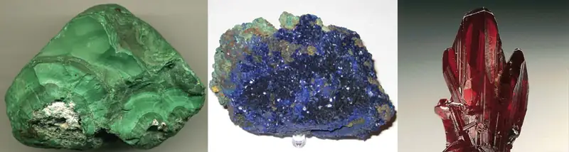
We have daily contact with many transition metals. Iron occurs everywhere—from the rings in your spiral notebook and the cutlery in your kitchen to automobiles, ships, buildings, and in the hemoglobin in your blood. Titanium is useful in the manufacture of lightweight, durable products such as bicycle frames, artificial hips, and jewelry. Chromium is useful as a protective plating on plumbing fixtures and automotive detailing.
In addition to being used in their pure elemental forms, many compounds containing transition metals have numerous other applications. Silver nitrate is used to create mirrors, zirconium silicate provides friction in automotive brakes, and many important cancer-fighting agents, like the drug cisplatin and related species, are platinum compounds.
The variety of properties exhibited by transition metals is due to their complex valence shells. Unlike most main group metals where one oxidation state is normally observed, the valence shell structure of transition metals means that they usually occur in several different stable oxidation states. In addition, electron transitions in these elements can correspond with absorption of photons in the visible electromagnetic spectrum, leading to colored compounds. Because of these behaviors, transition metals exhibit a rich and fascinating chemistry.
19.1 Occurrence, Preparation, and Properties of Transition Metals and Their Compounds¶
Transition metals are defined as those elements that have (or readily form) partially filled d orbitals. As shown in Figure 19.2, the d-block elements in groups 3–11 are transition elements. The f-block elements, also called inner transition metals (the lanthanides and actinides), also meet this criterion because the d orbital is partially occupied before the f orbitals. The d orbitals fill with the copper family (group 11); for this reason, the next family (group 12) are technically not transition elements. However, the group 12 elements do display some of the same chemical properties and are commonly included in discussions of transition metals. Some chemists do treat the group 12 elements as transition metals.
![The Periodic Table of Elements is shown. The 18 columns are labeled “Group” and the 7 rows are labeled “Period.” Below the table to the right is a box labeled “Color Code” with different colors for metals, metalloids, and nonmetals, as well as solids, liquids, and gases. To the left of this box is an enlarged picture of the upper-left most box on the table. The number 1 is in its upper-left hand corner and is labeled “Atomic number.” The letter “H” is in the middle in red indicating that it is a gas. It is labeled “Symbol.” Below that is the number 1.008 which is labeled “Atomic Mass.” Below that is the word hydrogen which is labeled “name.” The color of the box indicates that it is a nonmetal. Each element will be described in this order: atomic number; name; symbol; whether it is a metal, metalloid, or nonmetal; whether it is a solid, liquid, or gas; and atomic mass. Beginning at the top left of the table, or period 1, group 1, is a box containing “1; hydrogen; H; nonmetal; gas; and 1.008.” There is only one other element box in period 1, group 18, which contains “2; helium; H e; nonmetal; gas; and 4.003.” Period 2, group 1 contains “3; lithium; L i; metal; solid; and 6.94” Group 2 contains “4; beryllium; B e; metal; solid; and 9.012.” Groups 3 through 12 are skipped and group 13 contains “5; boron; B; metalloid; solid; 10.81.” Group 14 contains “6; carbon; C; nonmetal; solid; and 12.01.” Group 15 contains “7; nitrogen; N; nonmetal; gas; and 14.01.” Group 16 contains “8; oxygen; O; nonmetal; gas; and 16.00.” Group 17 contains “9; fluorine; F; nonmetal; gas; and 19.00.” Group 18 contains “10; neon; N e; nonmetal; gas; and 20.18.” Period 3, group 1 contains “11; sodium; N a; metal; solid; and 22.99.” Group 2 contains “12; magnesium; M g; metal; solid; and 24.31.” Groups 3 through 12 are skipped again in period 3 and group 13 contains “13; aluminum; A l; metal; solid; and 26.98.” Group 14 contains “14; silicon; S i; metalloid; solid; and 28.09.” Group 15 contains “15; phosphorous; P; nonmetal; solid; and 30.97.” Group 16 contains “16; sulfur; S; nonmetal; solid; and 32.06.” Group 17 contains “17; chlorine; C l; nonmetal; gas; and 35.45.” Group 18 contains “18; argon; A r; nonmetal; gas; and 39.95.” Period 4, group 1 contains “19; potassium; K; metal; solid; and 39.10.” Group 2 contains “20; calcium; C a; metal; solid; and 40.08.” Group 3 contains “21; scandium; S c; metal; solid; and 44.96.” Group 4 contains “22; titanium; T i; metal; solid; and 47.87.” Group 5 contains “23; vanadium; V; metal; solid; and 50.94.” Group 6 contains “24; chromium; C r; metal; solid; and 52.00.” Group 7 contains “25; manganese; M n; metal; solid; and 54.94.” Group 8 contains “26; iron; F e; metal; solid; and 55.85.” Group 9 contains “27; cobalt; C o; metal; solid; and 58.93.” Group 10 contains “28; nickel; N i; metal; solid; and 58.69.” Group 11 contains “29; copper; C u; metal; solid; and 63.55.” Group 12 contains “30; zinc; Z n; metal; solid; and 65.38.” Group 13 contains “31; gallium; G a; metal; solid; and 69.72.” Group 14 contains “32; germanium; G e; metalloid; solid; and 72.63.” Group 15 contains “33; arsenic; A s; metalloid; solid; and 74.92.” Group 16 contains “34; selenium; S e; nonmetal; solid; and 78.97.” Group 17 contains “35; bromine; B r; nonmetal; liquid; and 79.90.” Group 18 contains “36; krypton; K r; nonmetal; gas; and 83.80.” Period 5, group 1 contains “37; rubidium; R b; metal; solid; and 85.47.” Group 2 contains “38; strontium; S r; metal; solid; and 87.62.” Group 3 contains “39; yttrium; Y; metal; solid; and 88.91.” Group 4 contains “40; zirconium; Z r; metal; solid; and 91.22.” Group 5 contains “41; niobium; N b; metal; solid; and 92.91.” Group 6 contains “42; molybdenum; M o; metal; solid; and 95.95.” Group 7 contains “43; technetium; T c; metal; solid; and 97.” Group 8 contains “44; ruthenium; R u; metal; solid; and 101.1.” Group 9 contains “45; rhodium; R h; metal; solid; and 102.9.” Group 10 contains “46; palladium; P d; metal; solid; and 106.4.” Group 11 contains “47; silver; A g; metal; solid; and 107.9.” Group 12 contains “48; cadmium; C d; metal; solid; and 112.4.” Group 13 contains “49; indium; I n; metal; solid; and 114.8.” Group 14 contains “50; tin; S n; metal; solid; and 118.7.” Group 15 contains “51; antimony; S b; metalloid; solid; and 121.8.” Group 16 contains “52; tellurium; T e; metalloid; solid; and 127.6.” Group 17 contains “53; iodine; I; nonmetal; solid; and 126.9.” Group 18 contains “54; xenon; X e; nonmetal; gas; and 131.3.” Period 6, group 1 contains “55; cesium; C s; metal; solid; and 132.9.” Group 2 contains “56; barium; B a; metal; solid; and 137.3.” Group 3 breaks the pattern. The box has a large arrow pointing to a row of elements below the table with atomic numbers ranging from 57-71. In sequential order by atomic number, the first box in this row contains “57; lanthanum; L a; metal; solid; and 138.9.” To its right, the next is “58; cerium; C e; metal; solid; and 140.1.” Next is “59; praseodymium; P r; metal; solid; and 140.9.” Next is “60; neodymium; N d; metal; solid; and 144.2.” Next is “61; promethium; P m; metal; solid; and 145.” Next is “62; samarium; S m; metal; solid; and 150.4.” Next is “63; europium; E u; metal; solid; and 152.0.” Next is “64; gadolinium; G d; metal; solid; and 157.3.” Next is “65; terbium; T b; metal; solid; and 158.9.” Next is “66; dysprosium; D y; metal; solid; and 162.5.” Next is “67; holmium; H o; metal; solid; and 164.9.” Next is “68; erbium; E r; metal; solid; and 167.3.” Next is “69; thulium; T m; metal; solid; and 168.9.” Next is “70; ytterbium; Y b; metal; solid; and 173.1.” The last in this special row is “71; lutetium; L u; metal; solid; and 175.0.” Continuing in period 6, group 4 contains “72; hafnium; H f; metal; solid; and 178.5.” Group 5 contains “73; tantalum; T a; metal; solid; and 180.9.” Group 6 contains “74; tungsten; W; metal; solid; and 183.8.” Group 7 contains “75; rhenium; R e; metal; solid; and 186.2.” Group 8 contains “76; osmium; O s; metal; solid; and 190.2.” Group 9 contains “77; iridium; I r; metal; solid; and 192.2.” Group 10 contains “78; platinum; P t; metal; solid; and 195.1.” Group 11 contains “79; gold; A u; metal; solid; and 197.0.” Group 12 contains “80; mercury; H g; metal; liquid; and 200.6.” Group 13 contains “81; thallium; T l; metal; solid; and 204.4.” Group 14 contains “82; lead; P b; metal; solid; and 207.2.” Group 15 contains “83; bismuth; B i; metal; solid; and 209.0.” Group 16 contains “84; polonium; P o; metal; solid; and 209.” Group 17 contains “85; astatine; A t; metalloid; solid; and 210.” Group 18 contains “86; radon; R n; nonmetal; gas; and 222.” Period 7, group 1 contains “87; francium; F r; metal; solid; and 223.” Group 2 contains “88; radium; R a; metal; solid; and 226.” Group 3 breaks the pattern much like what occurs in period 6. A large arrow points from the box in period 7, group 3 to a special row containing the elements with atomic numbers ranging from 89-103, just below the row which contains atomic numbers 57-71. In sequential order by atomic number, the first box in this row contains “89; actinium; A c; metal; solid; and 227.” To its right, the next is “90; thorium; T h; metal; solid; and 232.0.” Next is “91; protactinium; P a; metal; solid; and 231.0.” Next is “92; uranium; U; metal; solid; and 238.0.” Next is “93; neptunium; N p; metal; solid; and N p.” Next is “94; plutonium; P u; metal; solid; and 244.” Next is “95; americium; A m; metal; solid; and 243.” Next is “96; curium; C m; metal; solid; and 247.” Next is “97; berkelium; B k; metal; solid; and 247.” Next is “98; californium; C f; metal; solid; and 251.” Next is “99; einsteinium; E s; metal; solid; and 252.” Next is “100; fermium; F m; metal; solid; and 257.” Next is “101; mendelevium; M d; metal; solid; and 258.” Next is “102; nobelium; N o; metal; solid; and 259.” The last in this special row is “103; lawrencium; L r; metal; solid; and 262.” Continuing in period 7, group 4 contains “104; rutherfordium; R f; metal; solid; and 267.” Group 5 contains “105; dubnium; D b; metal; solid; and 270.” Group 6 contains “106; seaborgium; S g; metal; solid; and 271.” Group 7 contains “107; bohrium; B h; metal; solid; and 270.” Group 8 contains “108; hassium; H s; metal; solid; and 277.” Group 9 contains “109; meitnerium; M t; not indicated; solid; and 276.” Group 10 contains “110; darmstadtium; D s; not indicated; solid; and 281.” Group 11 contains “111; roentgenium; R g; not indicated; solid; and 282.” Group 12 contains “112; copernicium; C n; metal; liquid; and 285.” Group 13 contains “113; ununtrium; U u t; not indicated; solid; and 285.” Group 14 contains “114; flerovium; F l; not indicated; solid; and 289.” Group 15 contains “115; ununpentium; U u p; not indicated; solid; and 288.” Group 16 contains “116; livermorium; L v; not indicated; solid; and 293.” Group 17 contains “117; ununseptium; U u s; not indicated; solid; and 294.” Group 18 contains “118; ununoctium; U u o; not indicated; solid; and 294.”](img/cnx-chem-19-01-periodiceconfig.webp)
The d-block elements are divided into the first transition series (the elements Sc through Cu), the second transition series (the elements Y through Ag), and the third transition series (the element La and the elements Hf through Au). Actinium, Ac, is the first member of the fourth transition series, which also includes Rf through Rg.
The f-block elements are the elements Ce through Lu, which constitute the lanthanide series (or lanthanoid series), and the elements Th through Lr, which constitute the actinide series (or actinoid series). Because lanthanum behaves very much like the lanthanide elements, it is considered a lanthanide element, even though its electron configuration makes it the first member of the third transition series. Similarly, the behavior of actinium means it is part of the actinide series, although its electron configuration makes it the first member of the fourth transition series.
Example 19.1 Valence Electrons in Transition Metals
Review how to write electron configurations, covered in the chapter on electronic structure and periodic properties of elements. Recall that for the transition and inner transition metals, it is necessary to remove the s electrons before the d or f electrons. Then, for each ion, give the electron configuration:
(a) cerium(III)
(b) lead(II)
(c) Ti2+
(d) Am3+
(e) Pd2+
For the examples that are transition metals, determine to which series they belong.
Solution
For ions, the s-valence electrons are lost prior to the d or f electrons.
(a) Ce3+[Xe]4f1; Ce3+ is an inner transition element in the lanthanide series.
(b) Pb2+[Xe]6s25d104f14; the electrons are lost from the p orbital. This is a main group element.
(c) titanium(II) [Ar]3d2; first transition series
(d) americium(III) [Rn]5f6; actinide
(e) palladium(II) [Kr]4d8; second transition series
Check Your Learning
Give an example of an ion from the first transition series with no d electrons.
Answer:
V5+ is one possibility. Other examples include Sc3+, Ti4+, Cr6+, and Mn7+.
Chemistry in Everyday Life: Uses of Lanthanides in Devices
Lanthanides (elements 57–71) are fairly abundant in the earth’s crust, despite their historic characterization as rare earth elements. Thulium, the rarest naturally occurring lanthanoid, is more common in the earth’s crust than silver (4.5 \(\times\) 10−5% versus 0.79 \(\times\) 10−5% by mass). There are 17 rare earth elements, consisting of the 15 lanthanoids plus scandium and yttrium. They are called rare because they were once difficult to extract economically, so it was rare to have a pure sample; due to similar chemical properties, it is difficult to separate any one lanthanide from the others. However, newer separation methods, such as ion exchange resins similar to those found in home water softeners, make the separation of these elements easier and more economical. Most ores that contain these elements have low concentrations of all the rare earth elements mixed together.
The commercial applications of lanthanides are growing rapidly. For example, europium is important in flat screen displays found in computer monitors, cell phones, and televisions. Neodymium is useful in laptop hard drives and in the processes that convert crude oil into gasoline (Figure 19.3). Holmium is found in dental and medical equipment. In addition, many alternative energy technologies rely heavily on lanthanoids. Neodymium and dysprosium are key components of hybrid vehicle engines and the magnets used in wind turbines.
![This figure contains two images. Figure a shows a background with approximately half of the background to the upper right covered by a dark blue quarter circle. The remainder of the background is red. On top of this surface are 15 vertical columns of light blue dots, which are evenly spaced with gaps between them approximately equal to the width of the columns. In figure b, a computer hard drive is shown. It consists of a thin black plastic rectangular frame on which a thin disk with a metallic appearance is placed. A curved grey shape lies outside of this disk in the rectangular frame and is circled in red. This curved shape has a thin, pointed extension that reaches to the surface of the metallic disk.](img/cnx-chem-19-01-lanthanoid.webp)
As the demand for lanthanide materials has increased faster than supply, prices have also increased. In 2008, dysprosium cost $110/kg; by 2014, the price had increased to $470/kg. Increasing the supply of lanthanoid elements is one of the most significant challenges facing the industries that rely on the optical and magnetic properties of these materials.
The transition elements have many properties in common with other metals. They are almost all hard, high-melting solids that conduct heat and electricity well. They readily form alloys and lose electrons to form stable cations. In addition, transition metals form a wide variety of stable coordination compounds, in which the central metal atom or ion acts as a Lewis acid and accepts one or more pairs of electrons. Many different molecules and ions can donate lone pairs to the metal center, serving as Lewis bases. In this chapter, we shall focus primarily on the chemical behavior of the elements of the first transition series.
Properties of the Transition Elements¶
Transition metals demonstrate a wide range of chemical behaviors. As can be seen from their reduction potentials (see Appendix H), some transition metals are strong reducing agents, whereas others have very low reactivity. For example, the lanthanides all form stable 3+ aqueous cations. The driving force for such oxidations is similar to that of alkaline earth metals such as Be or Mg, forming Be2+ and Mg2+. On the other hand, materials like platinum and gold have much higher reduction potentials. Their ability to resist oxidation makes them useful materials for constructing circuits and jewelry.
Ions of the lighter d-block elements, such as Cr3+, Fe3+, and Co2+, form colorful hydrated ions that are stable in water. However, ions in the period just below these (Mo3+, Ru3+, and Ir2+) are unstable and react readily with oxygen from the air. The majority of simple, water-stable ions formed by the heavier d-block elements are oxyanions such as \(\text{MoO}_{4}{}^{\text{2−}}\) and \(\text{ReO}_{4}{}^{-}.\)
Ruthenium, osmium, rhodium, iridium, palladium, and platinum are the platinum metals. With difficulty, they form simple cations that are stable in water, and, unlike the earlier elements in the second and third transition series, they do not form stable oxyanions.
Both the d- and f-block elements react with nonmetals to form binary compounds; heating is often required. These elements react with halogens to form a variety of halides ranging in oxidation state from 1+ to 6+. On heating, oxygen reacts with all of the transition elements except palladium, platinum, silver, and gold. The oxides of these latter metals can be formed using other reactants, but they decompose upon heating. The f-block elements, the elements of group 3, and the elements of the first transition series except copper react with aqueous solutions of acids, forming hydrogen gas and solutions of the corresponding salts.
Transition metals can form compounds with a wide range of oxidation states. Some of the observed oxidation states of the elements of the first transition series are shown in Figure 19.4. As we move from left to right across the first transition series, we see that the number of common oxidation states increases at first to a maximum towards the middle of the table, then decreases. The values in the table are typical values; there are other known values, and it is possible to synthesize new additions. For example, in 2014, researchers were successful in synthesizing a new oxidation state of iridium (9+).
![A table is shown with 10 columns and 8 rows. The first row is the header, which shows element symbols with atomic numbers as superscripts to the upper left of the element symbols. The following element symbols and numbers are shown in this manner; S c 21, T i 22, V 23, C r 24, M n 25, F e 26, C o 27, N i 28, C u 29, and Z n 30. The second row shows the value 1 plus under C u. The third row shows the value 2 plus under V, C r, M n, F e, C o, N i, C u, and Z n. The fourth row shows the value 3 plus under S c, T i, V, C r, M n, F e, C o, N i, and C u. The fifth row shows the value 4 plus under T I, V, C r, and M n. The sixth row shows the value 5 plus only under V. The seventh row shows the value 6 plus under C r, M n, and F e. The eighth row shows the value 7 plus under Mn.](img/cnx-chem-19-01-oxistatra.webp)
For the elements scandium through manganese (the first half of the first transition series), the highest oxidation state corresponds to the loss of all of the electrons in both the s and d orbitals of their valence shells. The titanium(IV) ion, for example, is formed when the titanium atom loses its two 3d and two 4s electrons. These highest oxidation states are the most stable forms of scandium, titanium, and vanadium. However, it is not possible to continue to remove all of the valence electrons from metals as we continue through the series. Iron is known to form oxidation states from 2+ to 6+, with iron(II) and iron(III) being the most common. Most of the elements of the first transition series form ions with a charge of 2+ or 3+ that are stable in water, although those of the early members of the series can be readily oxidized by air.
The elements of the second and third transition series generally are more stable in higher oxidation states than are the elements of the first series. In general, the atomic radius increases down a group, which leads to the ions of the second and third series being larger than are those in the first series. Removing electrons from orbitals that are located farther from the nucleus is easier than removing electrons close to the nucleus. For example, molybdenum and tungsten, members of group 6, are limited mostly to an oxidation state of 6+ in aqueous solution. Chromium, the lightest member of the group, forms stable Cr3+ ions in water and, in the absence of air, less stable Cr2+ ions. The sulfide with the highest oxidation state for chromium is Cr2S3, which contains the Cr3+ ion. Molybdenum and tungsten form sulfides in which the metals exhibit oxidation states of 4+ and 6+.
Example 19.2 Activity of the Transition Metals
Which is the strongest oxidizing agent in acidic solution: dichromate ion, which contains chromium(VI), permanganate ion, which contains manganese(VII), or titanium dioxide, which contains titanium(IV)?
Solution
First, we need to look up the reduction half reactions (in Appendix L) for each oxide in the specified oxidation state:
A larger reduction potential means that it is easier to reduce the reactant. Permanganate, with the largest reduction potential, is the strongest oxidizer under these conditions. Dichromate is next, followed by titanium dioxide as the weakest oxidizing agent (the hardest to reduce) of this set.
Check Your Learning
Predict what reaction (if any) will occur between HCl and Co(s), and between HBr and Pt(s). You will need to use the standard reduction potentials from Appendix L.
Answer:
\(\text{Co}(s)+\text{2HCl}\:\longrightarrow\:\text{H}_{2}+\text{CoCl}_{2}(aq);\) no reaction because Pt(s) will not be oxidized by H+
Preparation of the Transition Elements¶
Ancient civilizations knew about iron, copper, silver, and gold. The time periods in human history known as the Bronze Age and Iron Age mark the advancements in which societies learned to isolate certain metals and use them to make tools and goods. Naturally occurring ores of copper, silver, and gold can contain high concentrations of these metals in elemental form (Figure 19.5). Iron, on the other hand, occurs on earth almost exclusively in oxidized forms, such as rust (Fe2O3). The earliest known iron implements were made from iron meteorites. Surviving iron artifacts dating from approximately 4000 to 2500 BC are rare, but all known examples contain specific alloys of iron and nickel that occur only in extraterrestrial objects, not on earth. It took thousands of years of technological advances before civilizations developed iron smelting, the ability to extract a pure element from its naturally occurring ores and for iron tools to become common.
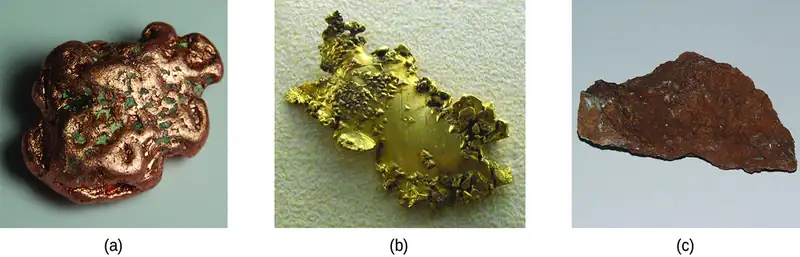
Generally, the transition elements are extracted from minerals found in a variety of ores. However, the ease of their recovery varies widely, depending on the concentration of the element in the ore, the identity of the other elements present, and the difficulty of reducing the element to the free metal.
In general, it is not difficult to reduce ions of the d-block elements to the free element. Carbon is a sufficiently strong reducing agent in most cases. However, like the ions of the more active main group metals, ions of the f-block elements must be isolated by electrolysis or by reduction with an active metal such as calcium.
We shall discuss the processes used for the isolation of iron, copper, and silver because these three processes illustrate the principal means of isolating most of the d-block metals. In general, each of these processes involves three principal steps: preliminary treatment, smelting, and refining.
- Preliminary treatment. In general, there is an initial treatment of the ores to make them suitable for the extraction of the metals. This usually involves crushing or grinding the ore, concentrating the metal-bearing components, and sometimes treating these substances chemically to convert them into compounds that are easier to reduce to the metal.
- Smelting. The next step is the extraction of the metal in the molten state, a process called smelting, which includes reduction of the metallic compound to the metal. Impurities may be removed by the addition of a compound that forms a slag—a substance with a low melting point that can be readily separated from the molten metal.
- Refining. The final step in the recovery of a metal is refining the metal. Low boiling metals such as zinc and mercury can be refined by distillation. When fused on an inclined table, low melting metals like tin flow away from higher-melting impurities. Electrolysis is another common method for refining metals.
Isolation of Iron¶
The early application of iron to the manufacture of tools and weapons was possible because of the wide distribution of iron ores and the ease with which iron compounds in the ores could be reduced by carbon. For a long time, charcoal was the form of carbon used in the reduction process. The production and use of iron became much more widespread about 1620, when coke was introduced as the reducing agent. Coke is a form of carbon formed by heating coal in the absence of air to remove impurities.
The first step in the metallurgy of iron is usually roasting the ore (heating the ore in air) to remove water, decomposing carbonates into oxides, and converting sulfides into oxides. The oxides are then reduced in a blast furnace that is 80–100 feet high and about 25 feet in diameter (Figure 19.6) in which the roasted ore, coke, and limestone (impure CaCO3) are introduced continuously into the top. Molten iron and slag are withdrawn at the bottom. The entire stock in a furnace may weigh several hundred tons.
![A diagram of a blast furnace is shown. The furnace has a cylindrical shape that is oriented vertically. A pipe at the lower left side of the figure is shaded yellow and is labeled “Slag.” It connects to an interior chamber. Situated at a level just below this piping on the right side of the figure is another pipe that is shaded orange. It opens at the lower right side of the figure. The orange-shaded substance at the bottom of the chamber that matches the contents of the pipe to its right is labeled “Molten iron.” The pipe has an arrow exiting to the right pointing to the label “Outlet.” Just above the slag and molten iron regions is narrower tubing on both the left and right sides of the chamber which lead slightly up and out from the central chamber to small oval shapes. These shapes are labeled, “Preheated air.” The region just above the points of entry of these two pipes or tubes into the chamber is a white region in which small rust-colored chunks of material appear suspended. This region tapers slightly to the bottom of the furnace. The region above has an orange background in which small rust-colored chunks are similarly suspended. This region fills nearly half of the interior of the furnace. Above this region is a grey shaded region. At the very top of the furnace, black line segments indicate directed openings through which small rust-colored chunks of material appear to be entering the furnace from the top. This material is labeled, “Roasted ore, coke, limestone.” Exiting the grey shaded interior region to the right is a pipe. An arrow points right exiting the pipe pointing to the label “C O, C O subscript 2, N subscript 2.” At the right side of the figure, furnace heights are labeled in order of increasing height between the outlet pipes, followed by temperatures and associated chemical reactions. Just above the pipe labeled, “Outlet,” no chemical equation appears right of, “5 f t, 1510 degrees C.” To the right of, “15 f t, 1300 degrees C,” is the equation, “C plus O subscript 2 right pointing arrow C O subscript 2.” To the right of, “25 f t, 1125 degrees C,” are the two equations, “C a O plus S i O subscript 2 right pointing arrow C a S i O subscript 3” and “C plus C O subscript 2 right pointing arrow 2 C O.” To the right of, “35 f t, 945 degrees C,” are the two equations, “C a C O subscript 3 right pointing arrow C a O plus C O subscript 2,” and, “C plus C O subscript 2 right pointing arrow 2 C O.” To the right of, “45 f t, 865 degrees C,” is the equation, “C plus C O subscript 2 right pointing arrow 2 C O.” To the right of, “55 f t, 525 degrees C,” is the equation “F e O plus C O right pointing arrow F e plus C O subscript 2.” To the right of, “65 f t, 410 degrees C,” is the equation, “F e subscript 3 O subscript 4 plus C O right pointing arrow 3 F e O plus C O subscript 2.” To the right of “75 f t, 230 degrees C,” is the equation, “3 F e subscript 2 O subscript 3 plus C O right pointing arrow 2 F e subscript 3 O subscript 4 plus C O subscript 2.”](img/cnx-chem-19-01-blastfurn.webp)
Near the bottom of a furnace are nozzles through which preheated air is blown into the furnace. As soon as the air enters, the coke in the region of the nozzles is oxidized to carbon dioxide with the liberation of a great deal of heat. The hot carbon dioxide passes upward through the overlying layer of white-hot coke, where it is reduced to carbon monoxide:
The carbon monoxide serves as the reducing agent in the upper regions of the furnace. The individual reactions are indicated in Figure 19.6.
The iron oxides are reduced in the upper region of the furnace. In the middle region, limestone (calcium carbonate) decomposes, and the resulting calcium oxide combines with silica and silicates in the ore to form slag. The slag is mostly calcium silicate and contains most of the commercially unimportant components of the ore:
Just below the middle of the furnace, the temperature is high enough to melt both the iron and the slag. They collect in layers at the bottom of the furnace; the less dense slag floats on the iron and protects it from oxidation. Several times a day, the slag and molten iron are withdrawn from the furnace. The iron is transferred to casting machines or to a steelmaking plant (Figure 19.7).
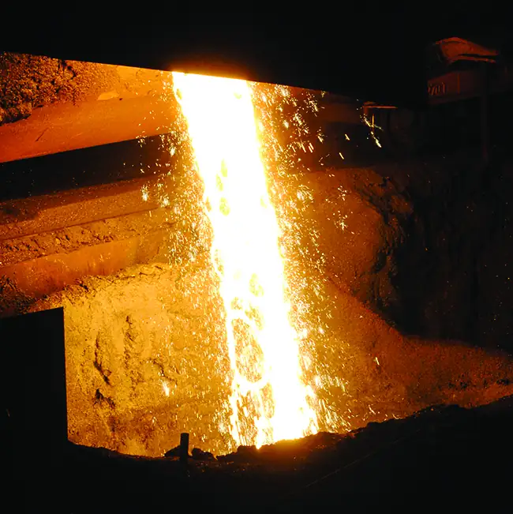
Much of the iron produced is refined and converted into steel. Steel is made from iron by removing impurities and adding substances such as manganese, chromium, nickel, tungsten, molybdenum, and vanadium to produce alloys with properties that make the material suitable for specific uses. Most steels also contain small but definite percentages of carbon (0.04%–2.5%). However, a large part of the carbon contained in iron must be removed in the manufacture of steel; otherwise, the excess carbon would make the iron brittle.
Link to Learning
You can watch an animation of steelmaking that walks you through the process.
Isolation of Copper¶
The most important ores of copper contain copper sulfides (such as covellite, CuS), although copper oxides (such as tenorite, CuO) and copper hydroxycarbonates [such as malachite, Cu2(OH)2CO3] are sometimes found. In the production of copper metal, the concentrated sulfide ore is roasted to remove part of the sulfur as sulfur dioxide. The remaining mixture, which consists of Cu2S, FeS, FeO, and SiO2, is mixed with limestone, which serves as a flux (a material that aids in the removal of impurities), and heated. Molten slag forms as the iron and silica are removed by Lewis acid-base reactions:
In these reactions, the silicon dioxide behaves as a Lewis acid, which accepts a pair of electrons from the Lewis base (the oxide ion).
Reduction of the Cu2S that remains after smelting is accomplished by blowing air through the molten material. The air converts part of the Cu2S into Cu2O. As soon as copper(I) oxide is formed, it is reduced by the remaining copper(I) sulfide to metallic copper:
The copper obtained in this way is called blister copper because of its characteristic appearance, which is due to the air blisters it contains (Figure 19.8). This impure copper is cast into large plates, which are used as anodes in the electrolytic refining of the metal (which is described in the chapter on electrochemistry).
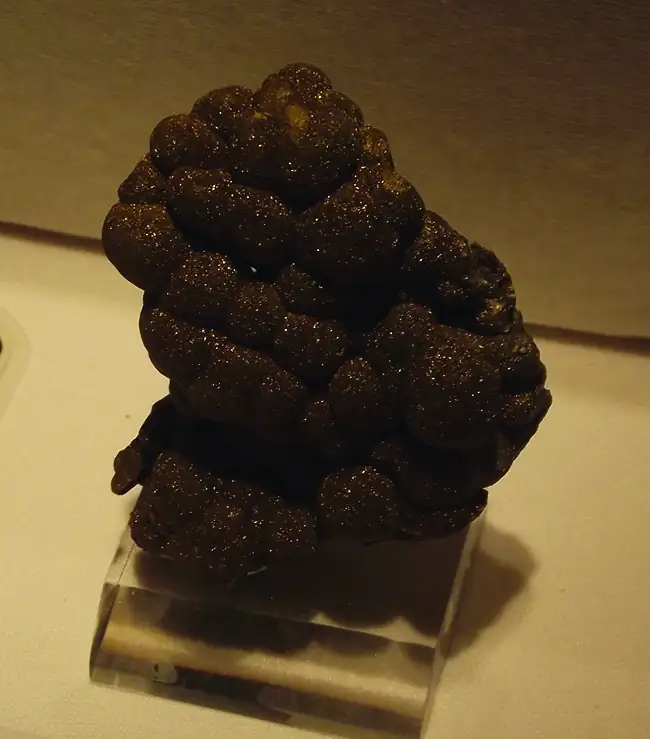
Isolation of Silver¶
Silver sometimes occurs in large nuggets (Figure 19.9) but more frequently in veins and related deposits. At one time, panning was an effective method of isolating both silver and gold nuggets. Due to their low reactivity, these metals, and a few others, occur in deposits as nuggets. The discovery of platinum was due to Spanish explorers in Central America mistaking platinum nuggets for silver. When the metal is not in the form of nuggets, it often useful to employ a process called hydrometallurgy to separate silver from its ores. Hydrology involves the separation of a metal from a mixture by first converting it into soluble ions and then extracting and reducing them to precipitate the pure metal. In the presence of air, alkali metal cyanides readily form the soluble dicyanoargentate(I) ion, \({[\text{Ag}{(\text{CN})}_{2}]}^{-},\) from silver metal or silver-containing compounds such as Ag2S and AgCl. Representative equations are:
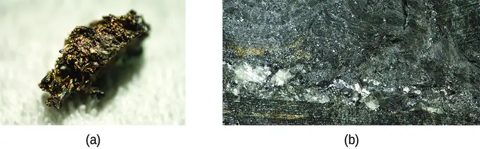
The silver is precipitated from the cyanide solution by the addition of either zinc or iron(II) ions, which serves as the reducing agent:
Example 19.3 Refining Redox
One of the steps for refining silver involves converting silver into dicyanoargenate(I) ions:
Explain why oxygen must be present to carry out the reaction. Why does the reaction not occur as:
Solution
The charges, as well as the atoms, must balance in reactions. The silver atom is being oxidized from the 0 oxidation state to the 1+ state. Whenever something loses electrons, something must also gain electrons (be reduced) to balance the equation. Oxygen is a good oxidizing agent for these reactions because it can gain electrons to go from the 0 oxidation state to the 2− state.
Check Your Learning
During the refining of iron, carbon must be present in the blast furnace. Why is carbon necessary to convert iron oxide into iron?
Answer:
The carbon is converted into CO, which is the reducing agent that accepts electrons so that iron(III) can be reduced to iron(0).
Transition Metal Compounds¶
The bonding in the simple compounds of the transition elements ranges from ionic to covalent. In their lower oxidation states, the transition elements form ionic compounds; in their higher oxidation states, they form covalent compounds or polyatomic ions. The variation in oxidation states exhibited by the transition elements gives these compounds a metal-based, oxidation-reduction chemistry. The chemistry of several classes of compounds containing elements of the transition series follows.
Halides¶
Anhydrous halides of each of the transition elements can be prepared by the direct reaction of the metal with halogens. For example:
Heating a metal halide with additional metal can be used to form a halide of the metal with a lower oxidation state:
The stoichiometry of the metal halide that results from the reaction of the metal with a halogen is determined by the relative amounts of metal and halogen and by the strength of the halogen as an oxidizing agent. Generally, fluorine forms fluoride-containing metals in their highest oxidation states. The other halogens may not form analogous compounds.
In general, the preparation of stable water solutions of the halides of the metals of the first transition series is by the addition of a hydrohalic acid to carbonates, hydroxides, oxides, or other compounds that contain basic anions. Sample reactions are:
Most of the first transition series metals also dissolve in acids, forming a solution of the salt and hydrogen gas. For example:
The polarity of bonds with transition metals varies based not only upon the electronegativities of the atoms involved but also upon the oxidation state of the transition metal. Remember that bond polarity is a continuous spectrum with electrons being shared evenly (covalent bonds) at one extreme and electrons being transferred completely (ionic bonds) at the other. No bond is ever 100% ionic, and the degree to which the electrons are evenly distributed determines many properties of the compound. Transition metal halides with low oxidation numbers form more ionic bonds. For example, titanium(II) chloride and titanium(III) chloride (TiCl2 and TiCl3) have high melting points that are characteristic of ionic compounds, but titanium(IV) chloride (TiCl4) is a volatile liquid, consistent with having covalent titanium-chlorine bonds. All halides of the heavier d-block elements have significant covalent characteristics.
The covalent behavior of the transition metals with higher oxidation states is exemplified by the reaction of the metal tetrahalides with water. Like covalent silicon tetrachloride, both the titanium and vanadium tetrahalides react with water to give solutions containing the corresponding hydrohalic acids and the metal oxides:
Oxides¶
As with the halides, the nature of bonding in oxides of the transition elements is determined by the oxidation state of the metal. Oxides with low oxidation states tend to be more ionic, whereas those with higher oxidation states are more covalent. These variations in bonding are because the electronegativities of the elements are not fixed values. The electronegativity of an element increases with increasing oxidation state. Transition metals in low oxidation states have lower electronegativity values than oxygen; therefore, these metal oxides are ionic. Transition metals in very high oxidation states have electronegativity values close to that of oxygen, which leads to these oxides being covalent.
The oxides of the first transition series can be prepared by heating the metals in air. These oxides are Sc2O3, TiO2, V2O5, Cr2O3, Mn3O4, Fe3O4, Co3O4, NiO, and CuO.
Alternatively, these oxides and other oxides (with the metals in different oxidation states) can be produced by heating the corresponding hydroxides, carbonates, or oxalates in an inert atmosphere. Iron(II) oxide can be prepared by heating iron(II) oxalate, and cobalt(II) oxide is produced by heating cobalt(II) hydroxide:
With the exception of CrO3 and Mn2O7, transition metal oxides are not soluble in water. They can react with acids and, in a few cases, with bases. Overall, oxides of transition metals with the lowest oxidation states are basic (and react with acids), the intermediate ones are amphoteric, and the highest oxidation states are primarily acidic. Basic metal oxides at a low oxidation state react with aqueous acids to form solutions of salts and water. Examples include the reaction of cobalt(II) oxide accepting protons from nitric acid, and scandium(III) oxide accepting protons from hydrochloric acid:
The oxides of metals with oxidation states of 4+ are amphoteric, and most are not soluble in either acids or bases. Vanadium(V) oxide, chromium(VI) oxide, and manganese(VII) oxide are acidic. They react with solutions of hydroxides to form salts of the oxyanions \(\text{VO}_{4}{}^{3-},\) \(\text{CrO}_{4}{}^{2-},\) and \(\text{MnO}_{4}{}^{-}.\) For example, the complete ionic equation for the reaction of chromium(VI) oxide with a strong base is given by:
Chromium(VI) oxide and manganese(VII) oxide react with water to form the acids H2CrO4 and HMnO4, respectively.
Hydroxides¶
When a soluble hydroxide is added to an aqueous solution of a salt of a transition metal of the first transition series, a gelatinous precipitate forms. For example, adding a solution of sodium hydroxide to a solution of cobalt sulfate produces a gelatinous pink or blue precipitate of cobalt(II) hydroxide. The net ionic equation is:
In this and many other cases, these precipitates are hydroxides containing the transition metal ion, hydroxide ions, and water coordinated to the transition metal. In other cases, the precipitates are hydrated oxides composed of the metal ion, oxide ions, and water of hydration:
These substances do not contain hydroxide ions. However, both the hydroxides and the hydrated oxides react with acids to form salts and water. When precipitating a metal from solution, it is necessary to avoid an excess of hydroxide ion, as this may lead to complex ion formation as discussed later in this chapter. The precipitated metal hydroxides can be separated for further processing or for waste disposal.
Carbonates¶
Many of the elements of the first transition series form insoluble carbonates. It is possible to prepare these carbonates by the addition of a soluble carbonate salt to a solution of a transition metal salt. For example, nickel carbonate can be prepared from solutions of nickel nitrate and sodium carbonate according to the following net ionic equation:
The reactions of the transition metal carbonates are similar to those of the active metal carbonates. They react with acids to form metals salts, carbon dioxide, and water. Upon heating, they decompose, forming the transition metal oxides.
Other Salts¶
In many respects, the chemical behavior of the elements of the first transition series is very similar to that of the main group metals. In particular, the same types of reactions that are used to prepare salts of the main group metals can be used to prepare simple ionic salts of these elements.
A variety of salts can be prepared from metals that are more active than hydrogen by reaction with the corresponding acids: Scandium metal reacts with hydrobromic acid to form a solution of scandium bromide:
The common compounds that we have just discussed can also be used to prepare salts. The reactions involved include the reactions of oxides, hydroxides, or carbonates with acids. For example:
Substitution reactions involving soluble salts may be used to prepare insoluble salts. For example:
In our discussion of oxides in this section, we have seen that reactions of the covalent oxides of the transition elements with hydroxides form salts that contain oxyanions of the transition elements.
How Sciences Interconnect: High Temperature Superconductors
A superconductor is a substance that conducts electricity with no resistance. This lack of resistance means that there is no energy loss during the transmission of electricity. This would lead to a significant reduction in the cost of electricity.
Most currently used, commercial superconducting materials, such as NbTi and Nb3Sn, do not become superconducting until they are cooled below 23 K (−250 °C). This requires the use of liquid helium, which has a boiling temperature of 4 K and is expensive and difficult to handle. The cost of liquid helium has deterred the widespread application of superconductors.
One of the most exciting scientific discoveries of the 1980s was the characterization of compounds that exhibit superconductivity at temperatures above 90 K. (Compared to liquid helium, 90 K is a high temperature.) Typical among the high-temperature superconducting materials are oxides containing yttrium (or one of several rare earth elements), barium, and copper in a 1:2:3 ratio. The formula of the ionic yttrium compound is YBa2Cu3O7.
The new materials become superconducting at temperatures close to 90 K (Figure 19.10), temperatures that can be reached by cooling with liquid nitrogen (boiling temperature of 77 K). Not only are liquid nitrogen-cooled materials easier to handle, but the cooling costs are also about 1000 times lower than for liquid helium.
Further advances during the same period included materials that became superconducting at even higher temperatures and with a wider array of materials. The DuPont team led by Uma Chowdry and Arthur Sleight identified Bismouth-Strontium-Copper-Oxides that became superconducting at temperatures as high as 110 K and, importantly, did not contain rare earth elements. Advances continued through the subsequent decades until, in 2020, a team led by Ranga Dias at University of Rochester announced the development of a room-temperature superconductor, opening doors to widespread applications. More research and development is needed to realize the potential of these materials, but the possibilities are very promising.
![A graph is shown. “Temperature (K)” appears on the horizontal axis, with axis labels present at 0, 100, 200, and 300. The vertical axis is labeled, “Resistance.” This axis begins at 0 and no additional markings are given. The upper end of this axis is terminated with an arrow head pointing upward unlike the horizontal axis. From the origin, a red line segment extends right to a point just left of 100 K. From this point, the plot continues with a vertical red line segment about five sixths of the way to the top of the graph. From the top of this line segment, another red line segment extends up and nearly to the top of the graph to the right.](img/cnx-chem-19-01-restemp.webp)
Although the brittle, fragile nature of these materials presently hampers their commercial applications, they have tremendous potential that researchers are hard at work improving their processes to help realize. Superconducting transmission lines would carry current for hundreds of miles with no loss of power due to resistance in the wires. This could allow generating stations to be located in areas remote from population centers and near the natural resources necessary for power production. The first project demonstrating the viability of high-temperature superconductor power transmission was established in New York in 2008.
Researchers are also working on using this technology to develop other applications, such as smaller and more powerful microchips. In addition, high-temperature superconductors can be used to generate magnetic fields for applications such as medical devices, magnetic levitation trains, and containment fields for nuclear fusion reactors (Figure 19.11).
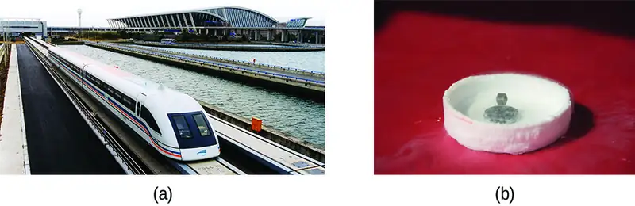
Link to Learning
Watch how a high-temperature superconductor levitates around a magnetic racetrack in the video.
19.2 Coordination Chemistry of Transition Metals¶
Learning Objectives
By the end of this section, you will be able to:
- List the defining traits of coordination compounds
- Describe the structures of complexes containing monodentate and polydentate ligands
- Use standard nomenclature rules to name coordination compounds
- Explain and provide examples of geometric and optical isomerism
- Identify several natural and technological occurrences of coordination compounds
The hemoglobin in your blood, the chlorophyll in green plants, vitamin B-12, and the catalyst used in the manufacture of polyethylene all contain coordination compounds. Ions of the metals, especially the transition metals, are likely to form complexes. Many of these compounds are highly colored (Figure 19.12). In the remainder of this chapter, we will consider the structure and bonding of these remarkable compounds.
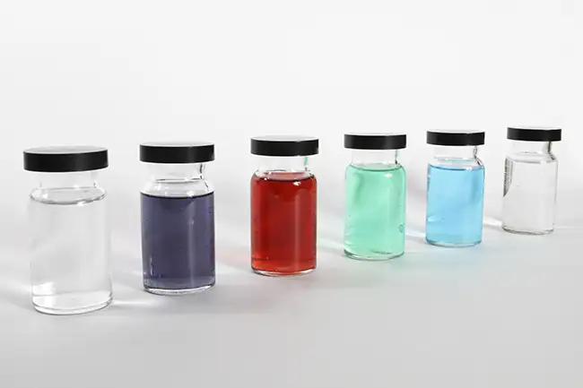
Remember that in most main group element compounds, the valence electrons of the isolated atoms combine to form chemical bonds that satisfy the octet rule. For instance, the four valence electrons of carbon overlap with electrons from four hydrogen atoms to form CH4. The one valence electron leaves sodium and adds to the seven valence electrons of chlorine to form the ionic formula unit NaCl (Figure 19.13). Transition metals do not normally bond in this fashion. They primarily form coordinate covalent bonds, a form of the Lewis acid-base interaction in which both of the electrons in the bond are contributed by a donor (Lewis base) to an electron acceptor (Lewis acid). The Lewis acid in coordination complexes, often called a central metal ion (or atom), is often a transition metal or inner transition metal, although main group elements can also form coordination compounds. The Lewis base donors, called ligands, can be a wide variety of chemicals—atoms, molecules, or ions. The only requirement is that they have one or more electron pairs, which can be donated to the central metal. Most often, this involves a donor atom with a lone pair of electrons that can form a coordinate bond to the metal.
![Three electron dot models are shown. To the left, a central C atom is shown with H atoms bonded above, below, to the left, and to the right. Between the C atom and each H atom are two electron dots, one red, and one black, next to each other in pairs between the atoms. The second structure to the right shows N superscript plus sign followed by a C l atom in brackets. This C l atom has pairs of electron dots above, below, left, and right of the element symbol. A single electron dot on the left side of the symbol is shown in red. All others are black. Outside the brackets to the right, a negative sign appears as a superscript. The third structure on the far right has a central S c atom. This atom is surrounded by six pairs of evenly-spaced electron dots. These pairs of dots are positioned between the S c atom and each of the O atoms from six H subscript 2 O molecules. This entire structure is within brackets to the right of which is the superscript 3 plus.](img/cnx-chem-19-02-bondtype.webp)
The coordination sphere consists of the central metal ion or atom plus its attached ligands. Brackets in a formula enclose the coordination sphere; species outside the brackets are not part of the coordination sphere. The coordination number of the central metal ion or atom is the number of donor atoms bonded to it. The coordination number for the silver ion in [Ag(NH3)2]+ is two (Figure 19.14). For the copper(II) ion in [CuCl4]2−, the coordination number is four, whereas for the cobalt(II) ion in [Co(H2O)6]2+ the coordination number is six. Each of these ligands is monodentate, from the Greek for “one toothed,” meaning that they connect with the central metal through only one atom. In this case, the number of ligands and the coordination number are equal.
![Three structures are shown. In a, a central A g atom has N atoms bonded to the left and right as indicated by line segments. Three H atoms are similarly bonded to each N atom extending out and up, out to the side, and out and below each N atom. The structure is enclosed in brackets with a superscript plus sign to the right of the brackets. In b, a C u atom is at the center of the structure. Line segments indicate bonds to two C l atoms, one above and the other below and to the left of the central atom. To the right, a dashed wedge, narrow toward the C u atom and widening toward a C l atom, is shown at the right side of the central C u atom. A solid wedge is similarly directed toward a C l atom below and slightly right of the central C u atom. This structure is enclosed in brackets with a superscript 2 negative sign present to the right of the brackets. In c, a structure is shown with a central C o atom. From the C o atom, line segments indicate bonds to H subscript 2 O molecules above and below the structure. Above and to both the right and left, dashed wedges indicate bonds to two H subscript 2 O molecules. Similarly, solid wedges below to both the right and left indicate bonds to two more H subscript 2 O molecules. Each bond in this structure is directed toward the O atom in each H subscript 2 O structure. This structure is enclosed in brackets. Outside the brackets to the right is a superscript 2 plus sign.](img/cnx-chem-19-02-cn.webp)
Many other ligands coordinate to the metal in more complex fashions. Bidentate ligands are those in which two atoms coordinate to the metal center. For example, ethylenediamine (en, H2NCH2CH2NH2) contains two nitrogen atoms, each of which has a lone pair and can serve as a Lewis base (Figure 19.15). Both of the atoms can coordinate to a single metal center. In the complex [Co(en)3]3+, there are three bidentate en ligands, and the coordination number of the cobalt(III) ion is six. The most common coordination numbers are two, four, and six, but examples of all coordination numbers from 1 to 15 are known.
![Two structures are shown. In a, H subscript 2 N appears at the left end of the structure. A short line segment extends up and to the right from the N atom to a C atom in a C H subscript 2 group. A short line segment extends down and to the right to another C atom in a C H subscript 2 group. A final short line segment extends from this C H subscript 2 group up and to the right to the N atom of an N H subscript 2 group. Each N atom in the structure has a pair of electron dots at its top. In b, a central C o atom has six N H subscript 2 groups attached with single bonds. These bonds are indicated with line segments extending above and below, dashed wedges extending up and to the left and right, and solid wedges extending below and to the left and right. The bonds to these groups are all directed toward the N atoms. The N H subscript 2 groups are each connected to C atoms of C H subscript 2 groups extending outward from the central C o atom. These C H subscript 2 groups are connected in pairs with bonds indicated by short line segments, forming 3 rings in the structure. This entire structure is enclosed in brackets. Outside the brackets to the right is a superscript 3 plus sign.](img/cnx-chem-19-02-en.webp)
Any ligand that bonds to a central metal ion by more than one donor atom is a polydentate ligand (or “many teeth”) because it can bite into the metal center with more than one bond. The term chelate (pronounced “KEY-late”) from the Greek for “claw” is also used to describe this type of interaction. Many polydentate ligands are chelating ligands, and a complex consisting of one or more of these ligands and a central metal is a chelate. A chelating ligand is also known as a chelating agent. A chelating ligand holds the metal ion rather like a crab’s claw would hold a marble. Figure 19.15 showed one example of a chelate. The heme complex in hemoglobin is another important example (Figure 19.16). It contains a polydentate ligand with four donor atoms that coordinate to iron.
![A structure is shown for the single ligand heme. At the center of this structure is an F e atom. From this atom, four single bonds extend up and to the right and left and below and to the right and left to four N atoms which are shown in red. Each N atom is a component of a 5 member ring with four C atoms. Each of these rings has a double bond between the C atoms that are not bonded to the N atom. The C atoms that are bonded to N atoms are connected to C atoms that serve as links between the 5-member rings. The bond to the C atom clockwise from the 5-member ring in each case is a double bond. The bond to the C atom counterclockwise from the 5-member ring in each case is a single bond. To the left of the structure, two of the C atoms in the 5-member rings that are not bonded to N are bonded to C H subscript 3 groups. The other carbons in these rings that are not bonded to N atoms are bonded to groups above and below. Above is a C H group double bonded to a C H subscript 2 group. Below is a C H subscript 2 group bonded to another C H subscript 2 group, which is bonded to a C O subscript 2 H group. At the right side of the structure, the C atoms in the 5-member rings that are not bonded to N atoms are bonded to additional structures. The C atom at to the right in the 5-member ring at the upper right is bonded to a C H group which is in turn double bonded to a C H subscript 2 group. Similarly, the right most C atom from the 5-member ring in the lower right is bonded to a C H subscript 3 group. The C atom from the 5-member ring not bonded to an N atom in the upper right region of the structure is bonded to a C H subscript 3 group above. Similarly, the C atom on the 5-member ring not bonded to an N atom in the lower right region of the structure is bonded to a C H subscript 2 group that is bonded to another C H subscript 2 group, which is bonded to a C O subscript 2 H group below.](img/cnx-chem-19-02-heme.webp)
Polydentate ligands are sometimes identified with prefixes that indicate the number of donor atoms in the ligand. As we have seen, ligands with one donor atom, such as NH3, Cl−, and H2O, are monodentate ligands. Ligands with two donor groups are bidentate ligands. Ethylenediamine, H2NCH2CH2NH2, and the anion of the acid glycine, \(\text{NH}_{2}\text{CH}_{2}\text{CO}_{2}{}^{-}\) (Figure 19.17) are examples of bidentate ligands. Tridentate ligands, tetradentate ligands, pentadentate ligands, and hexadentate ligands contain three, four, five, and six donor atoms, respectively. The ligand in heme (Figure 19.16) is a tetradentate ligand.
![A structure is shown. At the center of this structure is an P t atom. From this atom, two single bonds extend up and to the right and below and to the left to two O atoms which are shown in red. Similarly, two bonds extend up and to the left and down and to the right to N atoms in N H subscript 2 groups. The N atoms in these groups are in red. The N atoms are bonded to C H subscript 2 groups, which in turn are bonded to C atoms. These C atoms have doubly bonded O atoms bonded and oriented toward the outside of the structure. They are also singly bonded to the O atoms in the structure forming two rings connected by the central P t atom.](img/cnx-chem-19-02-gly.webp)
The Naming of Complexes¶
The nomenclature of the complexes is patterned after a system suggested by Alfred Werner, a Swiss chemist and Nobel laureate, whose outstanding work more than 100 years ago laid the foundation for a clearer understanding of these compounds. The following five rules are used for naming complexes:
1. If a coordination compound is ionic, name the cation first and the anion second, in accordance with the usual nomenclature.
2. Name the ligands first, followed by the central metal. Name the ligands alphabetically. Negative ligands (anions) have names formed by adding -o to the stem name of the group. For examples, see Table 19.1. For most neutral ligands, the name of the molecule is used. The four common exceptions are aqua (H2O), ammine (NH3), carbonyl (CO), and nitrosyl (NO). For example, name [Pt(NH3)2Cl4] as diamminetetrachloroplatinum(IV).
Table 19.1
| Examples of Anionic Ligands | |
|---|---|
| Anionic Ligand | Name |
| F− | fluoro |
| Cl− | chloro |
| Br− | bromo |
| I− | iodo |
| CN− | cyano |
| \(\text{NO}_{3}{}^{-}\) | nitrato |
| OH− | hydroxo |
| O2– | oxo |
| \(\text{C}_{2}\text{O}_{4}{}^{2-}\) | oxalato |
| \(\text{CO}_{3}{}^{2-}\) | carbonato |
3. If more than one ligand of a given type is present, the number is indicated by the prefixes di- (for two), tri- (for three), tetra- (for four), penta- (for five), and hexa- (for six). Sometimes, the prefixes bis- (for two), tris- (for three), and tetrakis- (for four) are used when the name of the ligand already includes di-, tri-, or tetra-, or when the ligand name begins with a vowel. For example, the ion bis(bipyridyl)osmium(II) uses bis- to signify that there are two ligands attached to Os, and each bipyridyl ligand contains two pyridine groups (C5H4N).
When the complex is either a cation or a neutral molecule, the name of the central metal atom is spelled exactly like the name of the element and is followed by a Roman numeral in parentheses to indicate its oxidation state (Table 19.2 and Table 19.3). When the complex is an anion, the suffix -ate is added to the stem of the name of the metal, followed by the Roman numeral designation of its oxidation state (Table 19.4). Sometimes, the Latin name of the metal is used when the English name is clumsy. For example, ferrate is used instead of ironate, plumbate instead leadate, and stannate instead of tinate. The oxidation state of the metal is determined based on the charges of each ligand and the overall charge of the coordination compound. For example, in [Cr(H2O)4Cl2]Br, the coordination sphere (in brackets) has a charge of 1+ to balance the bromide ion. The water ligands are neutral, and the chloride ligands are anionic with a charge of 1− each. To determine the oxidation state of the metal, we set the overall charge equal to the sum of the ligands and the metal: +1 = −2 + x, so the oxidation state (x) is equal to 3+.
Table 19.2
| Examples in Which the Complex Is a Cation | |
|---|---|
| [Co(NH3)6]Cl3 | hexaamminecobalt(III) chloride |
| [Pt(NH3)4Cl2]2+ | tetraamminedichloroplatinum(IV) ion |
| [Ag(NH3)2]+ | diamminesilver(I) ion |
| [Cr(H2O)4Cl2]Cl | tetraaquadichlorochromium(III) chloride |
| [Co(H2NCH2CH2NH2)3]2(SO4)3 | tris(ethylenediamine)cobalt(III) sulfate |
Table 19.3
| Examples in Which the Complex Is Neutral | |
|---|---|
| [Pt(NH3)2Cl4] | diamminetetrachloroplatinum(IV) |
| [Ni(H2NCH2CH2NH2)2Cl2] | dichlorobis(ethylenediamine)nickel(II) |
Table 19.4
| Examples in Which the Complex Is an Anion | |
|---|---|
| [PtCl6]2− | hexachloroplatinate(IV) ion |
| Na2[SnCl6] | sodium hexachlorostannate(IV) |
Link to Learning
Do you think you understand naming coordination complexes? You can look over more examples and test yourself with online quizzes at the University of Sydney’s site.
Example 19.4 Coordination Numbers and Oxidation States
Determine the name of the following complexes and give the coordination number of the central metal atom.
(a) Na2[PtCl6]
(b) K3[Fe(C2O4)3]
(c) [Co(NH3)5Cl]Cl2
Solution
(a) There are two Na+ ions, so the coordination sphere has a negative two charge: [PtCl6]2−. There are six anionic chloride ligands, so −2 = −6 + x, and the oxidation state of the platinum is 4+. The name of the complex is sodium hexachloroplatinate(IV), and the coordination number is six. (b) The coordination sphere has a charge of 3− (based on the potassium) and the oxalate ligands each have a charge of 2−, so the metal oxidation state is given by −3 = −6 + x, and this is an iron(III) complex. The name is potassium trisoxalatoferrate(III) (note that tris is used instead of tri because the ligand name starts with a vowel). Because oxalate is a bidentate ligand, this complex has a coordination number of six. (c) In this example, the coordination sphere has a cationic charge of 2+. The NH3 ligand is neutral, but the chloro ligand has a charge of 1−. The oxidation state is found by +2 = −1 + x and is 3+, so the complex is pentaamminechlorocobalt(III) chloride and the coordination number is six.
Check Your Learning
The complex potassium dicyanoargenate(I) is used to make antiseptic compounds. Give the formula and coordination number.
Answer:
K[Ag(CN)2]; coordination number two
The Structures of Complexes¶
For transition metal complexes, the coordination number determines the geometry around the central metal ion. The most common structures of the complexes in coordination compounds are square planar, tetrahedral, and octahedral, corresponding to coordination numbers of four, four, and six, respectively. Coordination numbers greater than six are less common and yield a variety of structures (see Figure 19.18 and Table 19.5):
![This figure contains three diagrams in black and white. The first is labeled, “Pentagonal Bipyramid.” It has 10 isosceles triangle faces, five at the top, joined at a vertex, making a point projecting upward at the top of the figure, and five below, joined at a vertex, making a point projecting downward, at the base of the figure. The second is labeled, “Square Antiprism.” It has flat upper and lower square surfaces and sides made up of 8 equilateral triangles. The sides alternate in orientation between pointing up and pointing down. The third diagram is labeled, “Dodecahedron.” It has twelve isosceles triangle faces.](img/cnx-chem-19-02-structures.webp)
Table 19.5
| Coordination Numbers and Molecular Geometry | ||
|---|---|---|
| Coordination Number | Molecular Geometry | Example |
| 2 | linear | [Ag(NH3)2]+ |
| 3 | trigonal planar | [Cu(CN)3]2− |
| 4 | tetrahedral(d0 or d10), low oxidation states for M | [Ni(CO)4] |
| 4 | square planar (d8) | [Ni(CN)4]2− |
| 5 | trigonal bipyramidal | [CoCl5]2− |
| 5 | square pyramidal | [VO(CN)4]2− |
| 6 | octahedral | [CoCl6]3− |
| 7 | pentagonal bipyramid | [ZrF7]3− |
| 8 | square antiprism | [ReF8]2− |
| 8 | dodecahedron | [Mo(CN)8]4− |
| 9 and above | more complicated structures | [ReH9]2− |
Unlike main group atoms in which both the bonding and nonbonding electrons determine the molecular shape, the nonbonding d-electrons do not change the arrangement of the ligands. Octahedral complexes have a coordination number of six, and the six donor atoms are arranged at the corners of an octahedron around the central metal ion. Examples are shown in Figure 19.19. The chloride and nitrate anions in [Co(H2O)6]Cl2 and [Cr(en)3](NO3)3, and the potassium cations in K2[PtCl6], are outside the brackets and are not bonded to the metal ion.
![Three structures are shown. In a, a structure is shown with a central C o atom. From the C o atom, line segments indicate bonds to H subscript 2 O molecules above and below the structure. Above and to both the right and left, dashed wedges indicate bonds to two H subscript 2 O molecules. Similarly, solid wedges below to both the right and left indicate bonds to two more H subscript 2 O molecules. Each bond in this structure is directed toward the O atom in each H subscript 2 O structure. This structure is enclosed in brackets. Outside the brackets to the right is the superscript 2 plus. Following this to the right appears 2 C l superscript negative sign. In b, a central C r atom has six N H subscript 2 groups attached with single bonds. These bonds are indicated with line segments extending above and below, dashed wedges extending up and to the left and right, and solid wedges extending below and to the left and right. The bonds to these groups are all directed toward the N atoms. The N H subscript 2 groups are each connected to C atoms of C H subscript 2 groups extending outward from the central C o atom. These C H subscript 2 groups are connected in pairs with bonds indicated by short line segments. This entire structure is enclosed in brackets. Outside the brackets to the right is the superscript 3 plus. Following to the right is 3 N O subscript 3 superscript negative sign. In c, 2 K superscript plus is followed by a structure in brackets. Inside the brackets is a central P t atom. From the P t atom, line segments indicate bonds to C l atoms above and below the structure. Above and to both the right and left, dashed wedges indicate bonds to C l atoms. Similarly, solid wedges below to both the right and left indicate bonds to two more C l atoms. This structure is enclosed in brackets. Outside the brackets to the right is the superscript 2 negative sign.](img/cnx-chem-19-02-oct.webp)
For transition metals with a coordination number of four, two different geometries are possible: tetrahedral or square planar. Unlike main group elements, where these geometries can be predicted from VSEPR theory, a more detailed discussion of transition metal orbitals (discussed in the section on Crystal Field Theory) is required to predict which complexes will be tetrahedral and which will be square planar. In tetrahedral complexes such as [Zn(CN)4]2− (Figure 19.20), each of the ligand pairs forms an angle of 109.5°. In square planar complexes, such as [Pt(NH3)2Cl2], each ligand has two other ligands at 90° angles (called the cis positions) and one additional ligand at an 180° angle, in the trans position.
![Two structures are shown. In a, inside of brackets, a central Z n atom is bonded to 4 C atoms in a tetrahedral spatial arrangement. Short line segments are used to represent a bond extending above and down and to the left of the Z n atom. A dashed wedge with the vertex at the Z n atom and wide end at the C atom is used to represent a bond down and to the right of the Z n atom. The final bond is indicated by a similar solid wedge again directed down and only slightly right of the center beneath the Z n atom. Four groups of three parallel short line segments are shown indicating triple bonds extending from each C atom opposite the bond with Z n to an associated N atom. Outside the brackets a superscript of 2 negative is shown. In b, at the center of this structure is a P t atom. From this atom, a single bond represented by a dashed wedge extends from a vertex at the P t atom up and to the right to the N atom of an N H subscript 3 group. Similarly, a single bond represented by a solid wedge extends from a vertex at the P t atom down and to the right to the N atom of an N H subscript 3 group. Another single bond represented by a dashed wedge extends from a vertex at the P t atom up and to the left to a C l atom. Similarly, a single bond represented by a solid wedge extends from a vertex at the P t atom down and to the left to a C l atom.](img/cnx-chem-19-02-4geom.webp)
Isomerism in Complexes¶
Isomers are different chemical species that have the same chemical formula. Transition metal complexes often exist as geometric isomers, in which the same atoms are connected through the same types of bonds but with differences in their orientation in space. Coordination complexes with two different ligands in the cis and trans positions from a ligand of interest form isomers. For example, the octahedral [Co(NH3)4Cl2]+ ion has two isomers. In the cis configuration, the two chloride ligands are adjacent to each other (Figure 19.21). The other isomer, the trans configuration, has the two chloride ligands directly across from one another.
![Two structures are shown. The first is labeled, “Violet, cis form.” Below this label inside brackets is a central C o atom. From the C o atom, line segments indicate bonds to a C l atom above and the O atom of an H subscript 2 O group below the structure. Above and to both the right and left, dashed wedges with their vertex at the C o atom widening as they move out from the atom indicate bonds with O atoms of H subscript 2 O groups. Similarly, solid wedges below to both the right and left indicate bonds to a C l atom on the right and the O atom of an H subscript 2 O group on the left. This structure is enclosed in brackets. Outside the brackets to the right is the superscript plus sign. The second is labeled, “Green, trans form.” Below this label inside brackets is a central C o atom. From the C o atom, line segments indicate bonds to C l atoms above and below the structure. Above and to both the right and left, dashed wedges indicate bonds with O atoms of H subscript 2 O groups. Similarly, solid wedges below to both the right and left indicate bonds to the O atoms of H subscript 2 O groups. This structure is also enclosed in brackets with a superscript plus sign outside the brackets to the right.](img/cnx-chem-19-02-cistrans.webp)
Different geometric isomers of a substance are different chemical compounds. They exhibit different properties, even though they have the same formula. For example, the two isomers of [Co(NH3)4Cl2]NO3 differ in color; the cis form is violet, and the trans form is green. Furthermore, these isomers have different dipole moments, solubilities, and reactivities. As an example of how the arrangement in space can influence the molecular properties, consider the polarity of the two [Co(NH3)4Cl2]NO3 isomers. Remember that the polarity of a molecule or ion is determined by the bond dipoles (which are due to the difference in electronegativity of the bonding atoms) and their arrangement in space. In one isomer, cis chloride ligands cause more electron density on one side of the molecule than on the other, making it polar. For the trans isomer, each ligand is directly across from an identical ligand, so the bond dipoles cancel out, and the molecule is nonpolar.
Example 19.5 Geometric Isomers
Identify which geometric isomer of [Pt(NH3)2Cl2] is shown in Figure 19.20. Draw the other geometric isomer and give its full name.
Solution
In the Figure 19.20, the two chlorine ligands occupy cis positions. The other form is shown in Figure 19.22. When naming specific isomers, the descriptor is listed in front of the name. Therefore, this complex is trans-diamminedichloroplatinum(II).
![A structure is shown with a central P t atom. From this atom, a dashed wedge with its vertex at the P t extends up and to the left toward the C l atom, indicating a bond, and widening as it moves out. Another dashed wedge with its vertex at the P t extends up and to the right toward the N H 3 atom, indicating a bond, and widening as it moves out. Similarly, a solid wedge below and to the left indicates a bond with an H 3 N atom and another solid wedge below and to the right indicates a bond with a C l atom.](img/cnx-chem-19-02-transplatin.webp)
Check Your Learning
Draw the ion trans-diaqua-trans-dibromo-trans-dichlorocobalt(II).
Answer:
![The structure in this figure shows a structure inside brackets. A central C o atom is shown with line segments indicating bonds to C l atoms above and below the structure. Above and to the left, a dashed wedge with its vertex at the C o atom widening as it moves out from the atom indicates a bond with the O atom of a H subscript 2 O group. A second dashed wedge indicates a bond with the central C o atom with a B r atom up and to the right. Similarly, a solid wedge below and to the left indicates a bond with a B r atom. A second solid wedge below and to the right indicates a bond with the O atom of an H subscript 2 O group. This structure is enclosed in brackets. Outside the brackets to the right is the superscript 2 negative sign.](img/cnx-chem-19-02-h2o2br2.webp)
Another important type of isomers are optical isomers, or enantiomers, in which two objects are exact mirror images of each other but cannot be lined up so that all parts match. This means that optical isomers are nonsuperimposable mirror images. A classic example of this is a pair of hands, in which the right and left hand are mirror images of one another but cannot be superimposed. Optical isomers are very important in organic and biochemistry because living systems often incorporate one specific optical isomer and not the other. Unlike geometric isomers, pairs of optical isomers have identical properties (boiling point, polarity, solubility, etc.). Optical isomers differ only in the way they affect polarized light and how they react with other optical isomers. For coordination complexes, many coordination compounds such as [M(en)3]n+ [in which Mn+ is a central metal ion such as iron(III) or cobalt(II)] form enantiomers, as shown in Figure 19.23. These two isomers will react differently with other optical isomers. For example, DNA helices are optical isomers, and the form that occurs in nature (right-handed DNA) will bind to only one isomer of [M(en)3]n+ and not the other.
![Two structures are shown with a vertical dashed line segment between them. The structure left of this line segment has a central M representing a metal atom. To this atom, six N H subscript 2 groups are attached with single bonds. These bonds are indicated with line segments extending above and below, dashed wedges extending up and to the left and right, and solid wedges extending below and to the left and right. The bonds to these groups are all directed toward the N atoms. The N H subscript 2 groups are each connected to C atoms of C H subscript 2 groups extending outward from the central M atom. These C H subscript 2 groups are connected in pairs with bonds indicated by short line segments. This structure has the overall appearance of a flower with three petals, two of which are equidistant from the dashed line. A mirror image of this structure appears on the right side of the dashed line, again with two of the “petals” equidistant from the dashed line to its left.](img/cnx-chem-19-02-enant.webp)
The [Co(en)2Cl2]+ ion exhibits geometric isomerism (cis/trans), and its cis isomer exists as a pair of optical isomers (Figure 19.24).
![This figure includes three structures. The first two are labeled “cis form (optical isomers).” These structures are followed by a vertical dashed line segment to the right of which appears a third structure that is labeled “trans form.” The first structure includes a central C o atom that has four N H subscript 2 groups and two C l atoms attached with single bonds. These bonds are indicated with line segments extending above and below, dashed wedges extending up and to the left and right, and solid wedges extending below and to the left and right. C l atoms are bonded at the top and at the upper left of the structure. The remaining four bonds extend from the central C o atom to the N atoms of N H subscript 2 groups. The N H subscript 2 groups are each connected to C atoms of C H subscript 2 groups extending outward from the central C o atom. These C H subscript 2 groups are connected in pairs with bonds indicated by short line segments, forming two rings in the structure. This entire structure is enclosed in brackets. Outside the brackets to the right is the superscript plus. The second structure, which appears to the be mirror image of the first structure, includes a central C o atom that has four N H subscript 2 groups and two C l atoms attached with single bonds. These bonds are indicated with line segments extending above and below, dashed wedges extending up and to the left and right, and solid wedges extending below and to the left and right. C l atoms are bonded at the top and at the upper right of the structure. The remaining four bonds extend from the central C o atom to the N atoms of N H subscript 2 groups. The N H subscript 2 groups are each connected to C atoms of C H subscript 2 groups extending outward from the central C o atom. These C H subscript 2 groups are connected in pairs with bonds indicated by short line segments, forming two rings in the structure. This entire structure is enclosed in brackets. Outside the brackets to the right is a superscript plus sign. The third, trans structure includes a central C o atom that has four N H subscript 2 groups and two C l atoms attached with single bonds. These bonds are indicated with line segments extending above and below, dashed wedges extending up and to the left and right, and solid wedges extending below and to the left and right. C l atoms are bonded at the top and bottom of the structure. The remaining four bonds extend from the central C o atom to the N atoms of N H subscript 2 groups. The N H subscript 2 groups are each connected to C atoms of C H subscript 2 groups extending outward from the central C o atom. These C H subscript 2 groups are connected in pairs with bonds indicated by short line segments, forming two rings in the structure. This entire structure is enclosed in brackets. Outside the brackets to the right is a superscript plus sign. This final structure has rings of atoms on opposite sides of the structure.](img/cnx-chem-19-02-coen2cl2.webp)
Linkage isomers occur when the coordination compound contains a ligand that can bind to the transition metal center through two different atoms. For example, the CN ligand can bind through the carbon atom (cyano) or through the nitrogen atom (isocyano). Similarly, SCN− can be bound through the sulfur or nitrogen atom, affording two distinct compounds ([Co(NH3)5SCN]2+ or [Co(NH3)5NCS]2+).
Ionization isomers (or coordination isomers) occur when one anionic ligand in the inner coordination sphere is replaced with the counter ion from the outer coordination sphere. A simple example of two ionization isomers are [CoCl6][Br] and [CoCl5Br][Cl].
Coordination Complexes in Nature and Technology¶
Chlorophyll, the green pigment in plants, is a complex that contains magnesium (Figure 19.25). This is an example of a main group element in a coordination complex. Plants appear green because chlorophyll absorbs red and purple light; the reflected light consequently appears green. The energy resulting from the absorption of light is used in photosynthesis.
![Structural formulas are shown for two complex molecules. The first has a central M g atom, to which N atoms are bonded above, below, left, and right. Each N atom is a component of a 5 member ring with four C atoms. Each of these rings has a double bond between the C atoms that are not bonded to the N atom. The C atoms that are bonded to N atoms are connected to C atoms that serve as links between the 5-member rings. The bond to the C atom clockwise from the 5-member ring in each case is a double bond. The bond to the C atom counterclockwise from the 5-member ring in each case is a single bond. To the left of the structure, two of the C atoms in the 5-member rings that are not bonded to N atoms are bonded to C H subscript 3 groups. The other carbons in these rings that are not bonded to N atoms are bonded to groups above and below. A variety of groups are attached outside this interconnected system of rings, including four C H subscript 3 groups, a C H subscript 2 C H subscript 2, C O O C subscript 20, H subscript 39 group, a C H C H subscript 2 group with a double bond between the C atoms, additional branching to form a five-member carbon ring to which an O atom is double bonded and a C O O C H subscript 3 group is attached. The second structure has a central C u atom to which four N atoms that participate in 5-member rings with C atoms are bonded. Unlike the first molecule, these 5-member rings are joined by N atoms between them, with a double bond on the counter clockwise side and a single bond on the clockwise side of each of the four N atoms that link the rings. On the side of each 5-member ring opposite its N atom, four additional carbon atoms are bonded, forming 6-member carbon rings with alternating double bonds. The double bonds are not present on the bonds that are shared with the 5-member rings.](img/cnx-chem-19-02-chlorblue.webp)
Chemistry in Everyday Life: Transition Metal Catalysts
One of the most important applications of transition metals is as industrial catalysts. As you recall from the chapter on kinetics, a catalyst increases the rate of reaction by lowering the activation energy and is regenerated in the catalytic cycle. Over 90% of all manufactured products are made with the aid of one or more catalysts. The ability to bind ligands and change oxidation states makes transition metal catalysts well suited for catalytic applications. Vanadium oxide is used to produce 230,000,000 tons of sulfuric acid worldwide each year, which in turn is used to make everything from fertilizers to cans for food. Plastics are made with the aid of transition metal catalysts, along with detergents, fertilizers, paints, and more (see Figure 19.26). Very complicated pharmaceuticals are manufactured with catalysts that are selective, reacting with one specific bond out of a large number of possibilities. Catalysts allow processes to be more economical and more environmentally friendly. Developing new catalysts and better understanding of existing systems are important areas of current research.
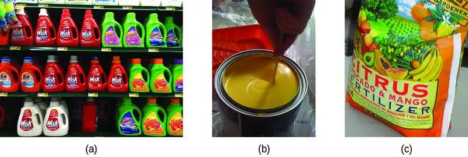
Portrait of a Chemist: Deanna D’Alessandro
Dr. Deanna D’Alessandro develops new metal-containing materials that demonstrate unique electronic, optical, and magnetic properties. Her research combines the fields of fundamental inorganic and physical chemistry with materials engineering. She is working on many different projects that rely on transition metals. For example, one type of compound she is developing captures carbon dioxide waste from power plants and catalytically converts it into useful products (see Figure 19.27).
![An image is shown of a catalytic converter. At the upper left, a blue arrow pointing into a pipe that enters a larger, widened chamber is labeled, “Dirty emissions.” A small black arrow that points to the lower right is positioned along the upper left side of the widened region. This arrow is labeled, “Additional oxygen from air pump.” The image shows the converter with the upper surface removed, exposing a red-brown interior. The portion of the converter closes to the dirty emissions inlet shows small, spherical components in an interior layer. This layer is labeled, “Three-way reduction catalyst.” The middle region shows closely packed small brown rods that are aligned parallel to the dirty emissions inlet pipe. The final nearly quarter of the interior of the catalytic converter again shows a layer of closely packed small, red-brown circles. Two large light grey arrows extend from this layer to the open region at the lower right of the image to the label, “Clean emissions.”](img/cnx-chem-19-02-catconvert.webp)
Another project involves the development of porous, sponge-like materials that are “photoactive.” The absorption of light causes the pores of the sponge to change size, allowing gas diffusion to be controlled. This has many potential useful applications, from powering cars with hydrogen fuel cells to making better electronics components. Although not a complex, self-darkening sunglasses are an example of a photoactive substance.
Watch this video to learn more about this research and listen to Dr. D’Alessandro (shown in Figure 19.28) describe what it is like being a research chemist.
Many other coordination complexes are also brightly colored. The square planar copper(II) complex phthalocyanine blue (from Figure 19.25) is one of many complexes used as pigments or dyes. This complex is used in blue ink, blue jeans, and certain blue paints.
The structure of heme (Figure 19.29), the iron-containing complex in hemoglobin, is very similar to that in chlorophyll. In hemoglobin, the red heme complex is bonded to a large protein molecule (globin) by the attachment of the protein to the heme ligand. Oxygen molecules are transported by hemoglobin in the blood by being bound to the iron center. When the hemoglobin loses its oxygen, the color changes to a bluish red. Hemoglobin will only transport oxygen if the iron is Fe2+; oxidation of the iron to Fe3+ prevents oxygen transport.
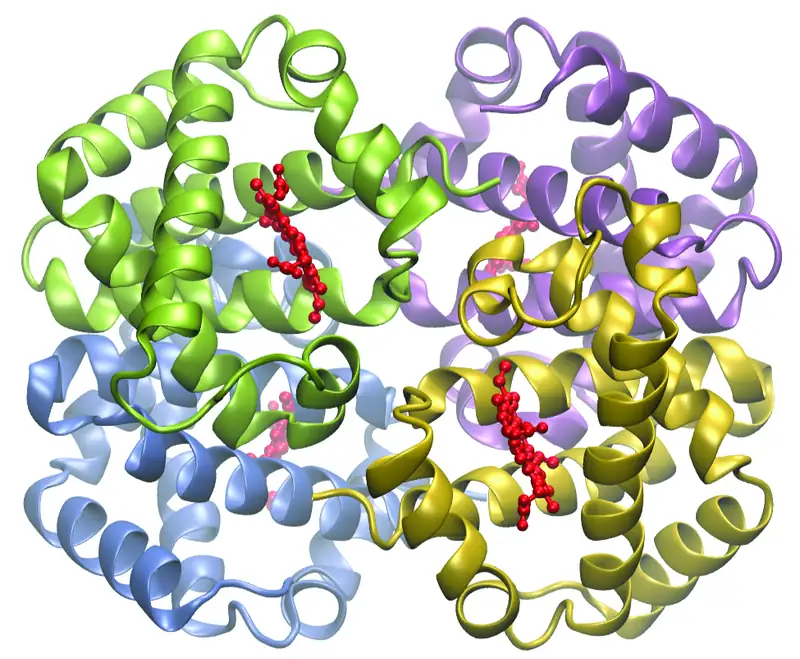
Complexing agents often are used for water softening because they tie up such ions as Ca2+, Mg2+, and Fe2+, which make water hard. Many metal ions are also undesirable in food products because these ions can catalyze reactions that change the color of food. Coordination complexes are useful as preservatives. For example, the ligand EDTA, (HO2CCH2)2NCH2CH2N(CH2CO2H)2, coordinates to metal ions through six donor atoms and prevents the metals from reacting (Figure 19.30). This ligand also is used to sequester metal ions in paper production, textiles, and detergents, and has pharmaceutical uses.
![This structure shows a metal atom, represented by M in red. Single bonds extending from the M are also shown in red. Bonds are indicated with O atoms by line segments extending above and below. Dashed wedges extend up and to the left to an N atom and up and to the right to an O atom, and solid wedges extend below and to the left to an N atom and below and to the right to an O atom. The O atoms bonded to the M atom each have a negative sign associated with them and they are each bonded to a C atom which is in turn double bonded to an O atom and single bonded to a C atom in a C H subscript 2 group. This last C atom in each case is single bonded to one of the N atoms, resulting in two five-member rings of which the M atom is a part. To the left of each N atom, are single bonds to the C in C H subscript 2 groups, which in turn are connected with a single bond, forming another five-member ring with the two N atoms and the M atom. Extending up and to the left of the upper N atom is a bond to the C atom of another C H subscript 2 group. This group is in turn bonded to a C atom which is double bonded to an O atom and single bonded to the O atom that is bonded to the M atom at the top of the structure, again forming a five-member ring. The same bonding structure repeats at the bottom of the structure extending from the N atom bonded at the lower left of the M atom. All single bonded O atoms in this structure have negative charges associated with them.](img/cnx-chem-19-02-edta.webp)
Complexing agents that tie up metal ions are also used as drugs. British Anti-Lewisite (BAL), HSCH2CH(SH)CH2OH, is a drug developed during World War I as an antidote for the arsenic-based war gas Lewisite. BAL is now used to treat poisoning by heavy metals, such as arsenic, mercury, thallium, and chromium. The drug is a ligand and functions by making a water-soluble chelate of the metal; the kidneys eliminate this metal chelate (Figure 19.31). Another polydentate ligand, enterobactin, which is isolated from certain bacteria, is used to form complexes of iron and thereby to control the severe iron buildup found in patients suffering from blood diseases such as Cooley’s anemia, who require frequent transfusions. As the transfused blood breaks down, the usual metabolic processes that remove iron are overloaded, and excess iron can build up to fatal levels. Enterobactin forms a water-soluble complex with excess iron, and the body can safely eliminate this complex.
![This figure includes two structures. In a, a five member ring is shown with an S atom at the top with additional atoms single bonded in the following order clockwise around the pentagonal ring; M atom, S atom, C atom of a C H subscript 2 group, followed by a C atom of a C H group. The final C atom is bonded to the original S atom completing the ring. The C in the C H group is at the upper left of the structure. This C has a C H subscript 2 group bonded above to which an O H group is bonded to the right. In b, a complex structure is shown. It has an open central region and multiple ring structures. A single F e atom is included, appearing to be bonded to six O atoms. Fifteen total O atoms are bonded into the structure along with three N atoms and multiple C atoms and H atoms. Nine O atoms are single bonded and are incorporated into rings and six are double bonded, extending outward from ring structures.](img/cnx-chem-19-02-balent.webp)
Example 19.6 Chelation Therapy
Ligands like BAL and enterobactin are important in medical treatments for heavy metal poisoning. However, chelation therapies can disrupt the normal concentration of ions in the body, leading to serious side effects, so researchers are searching for new chelation drugs. One drug that has been developed is dimercaptosuccinic acid (DMSA), shown in Figure 19.32. Identify which atoms in this molecule could act as donor atoms.
![A structure is shown that has an H atom on the far left which is single bonded to an O atom to its right. This atom is bonded to a C atom just below and to the right. This C atom has a double bonded O atom below and is bonded to the C atom of a C H group. Above this C atom, a solid wedge extends upward to the S atom of an S H group. A bond extends from this last C atom to another C atom of a second C H group below and to the right. A dashed wedge extends from this C atom to the S of an S H group below. A single bond extends up and to the right of the C atom to another C atom. This last C atom has a double bonded O atom above. A single bond extends to a second O atom below and to the right. To the right of this O atom, an H atom is connected with a single bond. All S and O atoms in the structure are shown with two unshared pairs of electron dots.](img/cnx-chem-19-02-dmsa.webp)
Solution
All of the oxygen and sulfur atoms have lone pairs of electrons that can be used to coordinate to a metal center, so there are six possible donor atoms. Geometrically, only two of these atoms can be coordinated to a metal at once. The most common binding mode involves the coordination of one sulfur atom and one oxygen atom, forming a five-member ring with the metal.
Check Your Learning
Some alternative medicine practitioners recommend chelation treatments for ailments that are not clearly related to heavy metals, such as cancer and autism, although the practice is discouraged by many scientific organizations.1 Identify at least two biologically important metals that could be disrupted by chelation therapy.
Answer:
Ca, Fe, Zn, and Cu
Ligands are also used in the electroplating industry. When metal ions are reduced to produce thin metal coatings, metals can clump together to form clusters and nanoparticles. When metal coordination complexes are used, the ligands keep the metal atoms isolated from each other. It has been found that many metals plate out as a smoother, more uniform, better-looking, and more adherent surface when plated from a bath containing the metal as a complex ion. Thus, complexes such as [Ag(CN)2]− and [Au(CN)2]− are used extensively in the electroplating industry.
In 1965, scientists at Michigan State University discovered that there was a platinum complex that inhibited cell division in certain microorganisms. Later work showed that the complex was cis-diamminedichloroplatinum(II), [Pt(NH3)2(Cl)2], and that the trans isomer was not effective. The inhibition of cell division indicated that this square planar compound could be an anticancer agent. In 1978, the US Food and Drug Administration approved this compound, known as cisplatin, for use in the treatment of certain forms of cancer. Since that time, many similar platinum compounds have been developed for the treatment of cancer. In all cases, these are the cis isomers and never the trans isomers. The diammine (NH3)2 portion is retained with other groups, replacing the dichloro [(Cl)2] portion. The newer drugs include carboplatin, oxaliplatin, and satraplatin.
19.3 Spectroscopic and Magnetic Properties of Coordination Compounds¶
Learning Objectives
By the end of this section, you will be able to:
- Outline the basic premise of crystal field theory (CFT)
- Identify molecular geometries associated with various d-orbital splitting patterns
- Predict electron configurations of split d orbitals for selected transition metal atoms or ions
- Explain spectral and magnetic properties in terms of CFT concepts
The behavior of coordination compounds cannot be adequately explained by the same theories used for main group element chemistry. The observed geometries of coordination complexes are not consistent with hybridized orbitals on the central metal overlapping with ligand orbitals, as would be predicted by valence bond theory. The observed colors indicate that the d orbitals often occur at different energy levels rather than all being degenerate, that is, of equal energy, as are the three p orbitals. To explain the stabilities, structures, colors, and magnetic properties of transition metal complexes, a different bonding model has been developed. Just as valence bond theory explains many aspects of bonding in main group chemistry, crystal field theory is useful in understanding and predicting the behavior of transition metal complexes.
Crystal Field Theory¶
To explain the observed behavior of transition metal complexes (such as how colors arise), a model involving electrostatic interactions between the electrons from the ligands and the electrons in the unhybridized d orbitals of the central metal atom has been developed. This electrostatic model is crystal field theory (CFT). It allows us to understand, interpret, and predict the colors, magnetic behavior, and some structures of coordination compounds of transition metals.
CFT focuses on the nonbonding electrons on the central metal ion in coordination complexes not on the metal-ligand bonds. Like valence bond theory, CFT tells only part of the story of the behavior of complexes. However, it tells the part that valence bond theory does not. In its pure form, CFT ignores any covalent bonding between ligands and metal ions. Both the ligand and the metal are treated as infinitesimally small point charges.
All electrons are negative, so the electrons donated from the ligands will repel the electrons of the central metal. Let us consider the behavior of the electrons in the unhybridized d orbitals in an octahedral complex. The five d orbitals consist of lobe-shaped regions and are arranged in space, as shown in Figure 19.33. In an octahedral complex, the six ligands coordinate along the axes.
![This figure includes diagrams of five d orbitals. Each diagram includes three axes. The z-axis is vertical and is denoted with an upward pointing arrow. It is labeled “z” in the first diagram. Arrows similarly identify the x-axis with an arrow pointing from the rear left to the right front, diagonally across the figure and the y-axis with an arrow pointing from the left front diagonally across the figure to the right rear of the diagram. These axes are similarly labeled as “x” and “y.” In this first diagram, four orange balloon-like shapes extend from a point at the origin out along the x- and y- axes in positive and negative directions covering just over half the length of the positive and negative x- and y- axes. Beneath the diagram is the label, “d subscript ( x superscript 2 minus y superscript 2 ).” The second diagram just right of the first is similar except the x, y, and z labels have been replaced in each instance with the letter L. Only a pair of the orange balloon-like shapes are present and extend from the origin above and below along the vertical axis. An orange toroidal or donut shape is positioned around the origin, oriented through the x- and y- axes. This shape extends out to about a third of the length of the positive and negative regions of the x- and y- axes. This diagram is labeled, “d subscript ( z superscript 2 ).” The third through fifth diagrams, similar to the first, show four orange balloon-like shapes. These diagrams differ however in the orientation of the shapes along the axes and the x-, y-, and z-axis labels have each been replaced with the letter L. Planes are added to the figures to help show the orientation differences with these diagrams. In the third diagram, a green plane is oriented vertically through the length of the x-axis and a blue plane is oriented horizontally through the length of the y-axis. The balloon shapes extend from the origin to the spaces between the positive z- and negative y- axes, positive z- and positive y- axes, negative z- and negative y- axes, and negative z- and positive y- axes. This diagram is labeled, “d subscript ( y z ).” In the fourth diagram, a green plane is oriented vertically through the x- and y- axes and a blue plane is oriented horizontally through the length of the x-axis. The balloon shapes extend from the origin to the spaces between the positive z- and negative x- axes, positive z- and positive x- axes, negative z- and negative x- axes, and negative z- and positive x- axes. This diagram is labeled “d subscript ( x z ).” In the fifth diagram, a pink plane is oriented vertically through the length of the y-axis and a green plane is oriented vertically through the length of the x-axis. The balloon shapes extend from the origin to the spaces between the positive x- and negative y- axes, positive x- and positive y- axes, negative x- and negative y- axes, and negative x- and positive y- axes. This diagram is labeled, “d subscript ( x y ).”](img/cnx-chem-19-03-dorbital.webp)
In an uncomplexed metal ion in the gas phase, the electrons are distributed among the five d orbitals in accord with Hund's rule because the orbitals all have the same energy. However, when ligands coordinate to a metal ion, the energies of the d orbitals are no longer the same.
In octahedral complexes, the lobes in two of the five d orbitals, the \(d_{z^{2}}\) and \(d_{x^{2}-y^{2}}\) orbitals, point toward the ligands (Figure 19.33). These two orbitals are called the eg orbitals (the symbol actually refers to the symmetry of the orbitals, but we will use it as a convenient name for these two orbitals in an octahedral complex). The other three orbitals, the dxy, dxz, and dyz orbitals, have lobes that point between the ligands and are called the t2g orbitals (again, the symbol really refers to the symmetry of the orbitals). As six ligands approach the metal ion along the axes of the octahedron, their point charges repel the electrons in the d orbitals of the metal ion. However, the repulsions between the electrons in the eg orbitals (the \(d_{z^{2}}\) and \(d_{x^{2}-y^{2}}\) orbitals) and the ligands are greater than the repulsions between the electrons in the t2g orbitals (the dzy, dxz, and dyz orbitals) and the ligands. This is because the lobes of the eg orbitals point directly at the ligands, whereas the lobes of the t2g orbitals point between them. Thus, electrons in the eg orbitals of the metal ion in an octahedral complex have higher potential energies than those of electrons in the t2g orbitals. The difference in energy may be represented as shown in Figure 19.34.
![A diagram is shown with a vertical arrow pointing upward along the height of the diagram at its left side. This arrow is labeled, “E.” to the right of this arrow are two rows of squares outlined in yellow. The first row has three evenly spaced squares labeled left to right, “d subscript ( x y ),” “d subscript ( x z ),” and, “d subscript ( y z ).” The second row is positioned just above the first and includes two evenly spaced squares labeled, “d subscript ( z superscript 2 ),” and, “d subscript ( x superscript 2 minus y superscript 2 ).” At the right end of the diagram, a short horizontal line segment is drawn just right of the lower side of the rightmost square. A double sided arrow extends from this line segment to a second horizontal line segment directly above the first and right of the lower side of the squares in the second row. The arrow is labeled “ capital delta subscript oct.”. The lower horizontal line segment is similarly labeled “t subscript 2 g orbitals” and the upper line segment is labeled “e subscript g orbitals.”](img/cnx-chem-19-03-cfse.webp)
The difference in energy between the eg and the t2g orbitals is called the crystal field splitting and is symbolized by Δoct, where oct stands for octahedral.
The magnitude of Δoct depends on many factors, including the nature of the six ligands located around the central metal ion, the charge on the metal, and whether the metal is using 3d, 4d, or 5d orbitals. Different ligands produce different crystal field splittings. The increasing crystal field splitting produced by ligands is expressed in the spectrochemical series, a short version of which is given here:
In this series, ligands on the left cause small crystal field splittings and are weak-field ligands, whereas those on the right cause larger splittings and are strong-field ligands. Thus, the Δoct value for an octahedral complex with iodide ligands (I−) is much smaller than the Δoct value for the same metal with cyanide ligands (CN−).
Electrons in the d orbitals follow the aufbau (“filling up”) principle, which says that the orbitals will be filled to give the lowest total energy, just as in main group chemistry. When two electrons occupy the same orbital, the like charges repel each other. The energy needed to pair up two electrons in a single orbital is called the pairing energy (P). Electrons will always singly occupy each orbital in a degenerate set before pairing. P is similar in magnitude to Δoct. When electrons fill the d orbitals, the relative magnitudes of Δoct and P determine which orbitals will be occupied.
In [Fe(CN)6]4−, the strong field of six cyanide ligands produces a large Δoct. Under these conditions, the electrons require less energy to pair than they require to be excited to the eg orbitals (Δoct > P). The six 3d electrons of the Fe2+ ion pair in the three t2g orbitals (Figure 19.35). Complexes in which the electrons are paired because of the large crystal field splitting are called low-spin complexes because the number of unpaired electrons (spins) is minimized.
![A diagram is shown with a vertical arrow pointing upward along the height of the diagram at its left side. This arrow is labeled, “E.” to the right of this arrow are several rows of squares outlined in yellow. The first row has three linked squares at the lower right side of the diagram labeled, “( F e ( C N ) subscript 6 ) superscript 4 negative sign.” Each square contains two half arrows, with the left half arrow pointing up and the right half arrow pointing down. A second row is positioned just above and to the left of the first, with the bottom of the squares at a height equal with the top of the squares in the first row. This group is also composed of 3 linked squares. The square to the left contains two half arrows, with the left half arrow pointing up and the right half arrow pointing down. The remaining two squares in this row only have upward pointing half arrows. At the bottom of the figure, just below this group is the label “( F e ( H subscript 2 O ) subscript 6) superscript 2 plus sign.” To the left of this row, a third row that includes 5 linked squares is positioned with the lower edge of the squares at a height equal to the tops of the squares in row two. The square to the left contains two half arrows, one up and one down. All other squares in this group contain single upward pointing arrows. At the bottom of the figure beneath this row appears the label, “F e superscript 2 plus sign no ligands.” A fourth row composed of 2 linked squares appears to the right and above the second row. The lower edge of the squares is at a height level with the top of the squares of the third row. Each of these squares contains a single upward pointing half arrow. A fifth row of 2 squares is positioned above and to the right directly above the first row with the base of the squares positioned at a level equal to the top of the previous row of squares. These squares are empty. At the right of the diagram, a short horizontal line segment is drawn just right of the lower side of the rightmost square of the first row. A double-headed arrow extends from this line segment to a second horizontal line segment directly above the first and right of the lower side of the fifth row of squares. The arrow is labeled, “Low spin, large delta subscript oct,” to the right. The lower horizontal line segment is similarly labeled, “t subscript 2 g,” and the upper line segment is labeled, “e subscript g.” To the right of the second and fourth rows, a short horizontal line segment is drawn just right of the lower side of the rightmost square of the second row. A double-headed arrow extends from this line segment to a second horizontal line segment directly above the first and right of the lower side of the fourth row of squares. The arrow is labeled, “High spin, small capital delta subscript oct,” to the right. The lower horizontal line segment is similarly labeled, “t subscript 2 g,” and the upper line segment is labeled, “e subscript g.”](img/cnx-chem-19-03-lowhigh.webp)
In [Fe(H2O)6]2+, on the other hand, the weak field of the water molecules produces only a small crystal field splitting (Δoct < P). Because it requires less energy for the electrons to occupy the eg orbitals than to pair together, there will be an electron in each of the five 3d orbitals before pairing occurs. For the six d electrons on the iron(II) center in [Fe(H2O)6]2+, there will be one pair of electrons and four unpaired electrons (Figure 19.35). Complexes such as the [Fe(H2O)6]2+ ion, in which the electrons are unpaired because the crystal field splitting is not large enough to cause them to pair, are called high-spin complexes because the number of unpaired electrons (spins) is maximized.
A similar line of reasoning shows why the [Fe(CN)6]3− ion is a low-spin complex with only one unpaired electron, whereas both the [Fe(H2O)6]3+ and [FeF6]3− ions are high-spin complexes with five unpaired electrons.
Example 19.7 High- and Low-Spin Complexes
Predict the number of unpaired electrons.
(a) K3[CrI6]
(b) [Cu(en)2(H2O)2]Cl2
(c) Na3[Co(NO2)6]
Solution
The complexes are octahedral.
(a) Cr3+ has a d3 configuration. These electrons will all be unpaired.
(b) Cu2+ is d9, so there will be one unpaired electron.
(c) Co3+ has d6 valence electrons, so the crystal field splitting will determine how many are paired. Nitrite is a strong-field ligand, so the complex will be low spin. Six electrons will go in the t2g orbitals, leaving 0 unpaired.
Check Your Learning
The size of the crystal field splitting only influences the arrangement of electrons when there is a choice between pairing electrons and filling the higher-energy orbitals. For which d-electron configurations will there be a difference between high- and low-spin configurations in octahedral complexes?
Answer:
d4, d5, d6, and d7
Example 19.8 CFT for Other Geometries
CFT is applicable to molecules in geometries other than octahedral. In octahedral complexes, remember that the lobes of the eg set point directly at the ligands. For tetrahedral complexes, the d orbitals remain in place, but now we have only four ligands located between the axes (Figure 19.36). None of the orbitals points directly at the tetrahedral ligands. However, the eg set (along the Cartesian axes) overlaps with the ligands less than does the t2g set. By analogy with the octahedral case, predict the energy diagram for the d orbitals in a tetrahedral crystal field. To avoid confusion, the octahedral eg set becomes a tetrahedral e set, and the octahedral t2g set becomes a t2 set.
![This figure includes a three dimensional diagram. At the origin appears the letter M. An arrow, labeled, “z,” at its tip, points upward through the center. An arrow, labeled, “x,” at its tip, points right through the center. A third arrow, labeled, “y,” at its tip, points through the center from the left front to the right back portion of the diagram. A rectangular prism is drawn in green, extending out approximately three-quarters of the lengths from the origin along the positive and negative x-, y-, and z- axes. Small red spheres are positioned at the left upper front, right upper back, right lower front, and left lower back vertices of the prism. Red lines extend from the central M through the prism to these four small red spheres.](img/cnx-chem-19-03-tetcube.webp)
Solution
Since CFT is based on electrostatic repulsion, the orbitals closer to the ligands will be destabilized and raised in energy relative to the other set of orbitals. The splitting is less than for octahedral complexes because the overlap is less, so Δtet is usually small \(\left( \Delta_{\text{tet}}=\:\frac{4}{9}\:\Delta_{\text{oct}} \right):\)
![A diagram is shown with a vertical arrow pointing upward along the height of the diagram at its left side. This arrow is labeled, “E.” to the right of this arrow are two rows of squares outlined in yellow. The first row has two adjacent squares. The second row is positioned just above the first and includes three adjacent squares. At the right side of the diagram, a short horizontal line segment is drawn just right of the lower side of the rightmost square in the first row. A double-headed arrow extends from this line segment to a second horizontal line segment directly above the first and right of the lower side of the squares in the second row. The arrow is labeled, “small capital delta subscript tet,” to the right. The lower horizontal line segment is similarly labeled, “e subscript,” and the upper line segment is labeled, “t subscript 2.”](img/cnx-chem-19-03-smalldeltt-img.webp)
Check Your Learning
Explain how many unpaired electrons a tetrahedral d4 ion will have.
Answer:
4; because Δtet is small, all tetrahedral complexes are high spin and the electrons go into the t2 orbitals before pairing
The other common geometry is square planar. It is possible to consider a square planar geometry as an octahedral structure with a pair of trans ligands removed. The removed ligands are assumed to be on the z-axis. This changes the distribution of the d orbitals, as orbitals on or near the z-axis become more stable, and those on or near the x- or y-axes become less stable. This results in the octahedral t2g and the eg sets splitting and gives a more complicated pattern, as depicted below:
![A diagram is shown with four rows of vertically oriented rectangles. The lower level has two rectangles with a space between them. The rectangle on the left is labeled, “d subscript x z,” below. The rectangle to its right is similarly labeled, “d subscript y z.” Just above, the second row contains only 1 rectangle above and between the lower two. This rectangle is labeled, “d subscript z squared.” Just above, the third row contains only 1 rectangle directly above. This rectangle is labeled, “d subscript x z.” Just above, the fourth row contains only 1 rectangle directly above. This rectangle is labeled, “d subscript x squared minus y squared.”](img/cnx-chem-19-03-pattern-img.webp)
Magnetic Moments of Molecules and Ions¶
Experimental evidence of magnetic measurements supports the theory of high- and low-spin complexes. Remember that molecules such as O2 that contain unpaired electrons are paramagnetic. Paramagnetic substances are attracted to magnetic fields. Many transition metal complexes have unpaired electrons and hence are paramagnetic. Molecules such as N2 and ions such as Na+ and [Fe(CN)6]4− that contain no unpaired electrons are diamagnetic. Diamagnetic substances have a slight tendency to be repelled by magnetic fields.
When an electron in an atom or ion is unpaired, the magnetic moment due to its spin makes the entire atom or ion paramagnetic. The size of the magnetic moment of a system containing unpaired electrons is related directly to the number of such electrons: the greater the number of unpaired electrons, the larger the magnetic moment. Therefore, the observed magnetic moment is used to determine the number of unpaired electrons present. The measured magnetic moment of low-spin d6 [Fe(CN)6]4− confirms that iron is diamagnetic, whereas high-spin d6 [Fe(H2O)6]2+ has four unpaired electrons with a magnetic moment that confirms this arrangement.
Colors of Transition Metal Complexes¶
When atoms or molecules absorb light at the proper frequency, their electrons are excited to higher-energy orbitals. For many main group atoms and molecules, the absorbed photons are in the ultraviolet range of the electromagnetic spectrum, which cannot be detected by the human eye. For coordination compounds, the energy difference between the d orbitals often allows photons in the visible range to be absorbed.
The human eye perceives a mixture of all the colors, in the proportions present in sunlight, as white light. Complementary colors, those located across from each other on a color wheel, are also used in color vision. The eye perceives a mixture of two complementary colors, in the proper proportions, as white light. Likewise, when a color is missing from white light, the eye sees its complement. For example, when red photons are absorbed from white light, the eyes see the color green. When violet photons are removed from white light, the eyes see lemon yellow. The blue color of the [Cu(NH3)4]2+ ion results because this ion absorbs orange and red light, leaving the complementary colors of blue and green (Figure 19.37).
![This figure includes three diagrams. In a, red, orange, yellow, green, blue, indigo, and violet incident arrows point from the upper left to the lower right toward one black, one white, and two yellow rectangular surfaces. No arrows are indicated leaving the black surface. On the white surface, arrows of all included colors extend from the surface of the rectangle extending from just right of the tips of the incident arrows that approach the rectangle to the upper right. For the first yellow surface, only a yellow arrow extends from a point just past the tip of the yellow incident arrow to the upper right. For the second yellow surface, all colors of arrows except indigo extend from points just past the tips of the incident arrows to the upper right. In b, a circle shaded in red at the upper left blends to orange, yellow, green, blue, indigo, and violet moving clockwise about the circle. The leftmost side of the red region has a radius that is labeled, “800 n m,” at the edge of the circle. A radius drawn to the top of the circle in the red-orange region is labeled, “620 n m.” A radius drawn to a point near the center of the first quadrant of the circle in the orange-yellow region is labeled, “580 n m.” A radius drawn to a point near the center of the second quadrant of the circle in the yellow-green region is labeled, “560 n m.” A radius drawn to the bottom of the circle in the blue region is labeled, “490 n m.” A radius drawn to a point near the center of the third quadrant of the circle in the indigo region is labeled, “430 n m.” An unlabeled radius is drawn to the leftmost point on the circle in the violet region. The violet region ends where the red region began on the circle. This radius is labeled, “400 n m,” just to the left and below the, “800 n m,” label associated with the red region. In c, a test tube containing a blue substance is shown. To the left of the test tube, incident colored arrows are shown pointing to the test tube. The colors of the arrows in order from bottom to top are red, orange, yellow, green, blue, indigo, and violet. Above these arrows is the label, “White light.” To the right of the test tube, yellow, green, blue, indigo, and violet arrows point right. These arrows are positioned at the same level on the test tube as their matching incident arrows on the left of the test tube. Above these arrows is the label, “Blue-appearing light.”](img/cnx-chem-19-03-lightper.webp)
Example 19.9 Colors of Complexes
The octahedral complex [Ti(H2O)6]3+ has a single d electron. To excite this electron from the ground state t2g orbital to the eg orbital, this complex absorbs light from 450 to 600 nm. The maximum absorbance corresponds to Δoct and occurs at 499 nm. Calculate the value of Δoct in Joules and predict what color the solution will appear.
Solution
Using Planck's equation (refer to the section on electromagnetic energy), we calculate:
Because the complex absorbs 600 nm (orange) through 450 (blue), the indigo, violet, and red wavelengths will be transmitted, and the complex will appear purple.
Check Your Learning
A complex that appears green, absorbs photons of what wavelengths?
Answer:
red, 620–800 nm
Small changes in the relative energies of the orbitals that electrons are transitioning between can lead to drastic shifts in the color of light absorbed. Therefore, the colors of coordination compounds depend on many factors. As shown in Figure 19.38, different aqueous metal ions can have different colors. In addition, different oxidation states of one metal can produce different colors, as shown for the vanadium complexes in the link below.
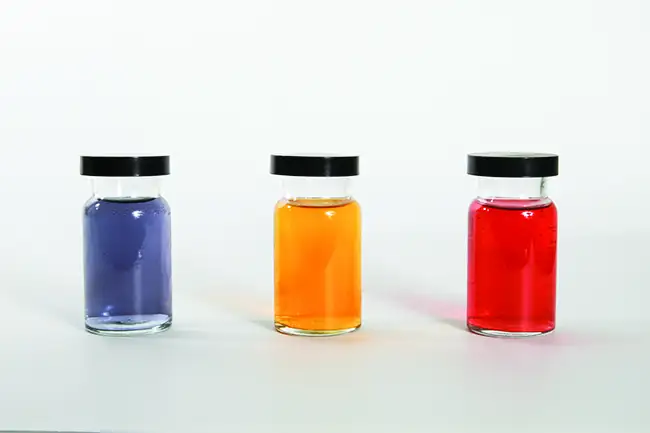
The specific ligands coordinated to the metal center also influence the color of coordination complexes. For example, the iron(II) complex [Fe(H2O)6]SO4 appears blue-green because the high-spin complex absorbs photons in the red wavelengths (Figure 19.39). In contrast, the low-spin iron(II) complex K4[Fe(CN)6] appears pale yellow because it absorbs higher-energy violet photons.
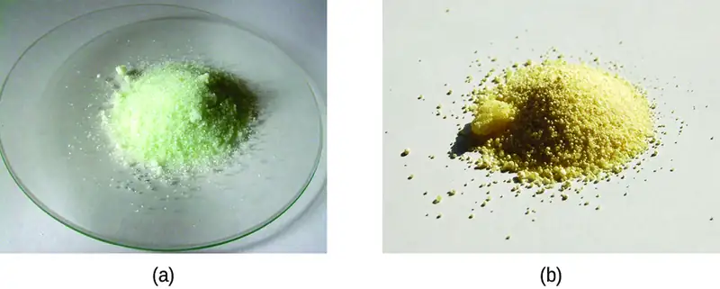
Link to Learning
Watch this video of the reduction of vanadium complexes to observe the colorful effect of changing oxidation states.
In general, strong-field ligands cause a large split in the energies of d orbitals of the central metal atom (large Δoct). Transition metal coordination compounds with these ligands are yellow, orange, or red because they absorb higher-energy violet or blue light. On the other hand, coordination compounds of transition metals with weak-field ligands are often blue-green, blue, or indigo because they absorb lower-energy yellow, orange, or red light.
A coordination compound of the Cu+ ion has a d10 configuration, and all the eg orbitals are filled. To excite an electron to a higher level, such as the 4p orbital, photons of very high energy are necessary. This energy corresponds to very short wavelengths in the ultraviolet region of the spectrum. No visible light is absorbed, so the eye sees no change, and the compound appears white or colorless. A solution containing [Cu(CN)2]−, for example, is colorless. On the other hand, octahedral Cu2+ complexes have a vacancy in the eg orbitals, and electrons can be excited to this level. The wavelength (energy) of the light absorbed corresponds to the visible part of the spectrum, and Cu2+ complexes are almost always colored—blue, blue-green violet, or yellow (Figure 19.40). Although CFT successfully describes many properties of coordination complexes, molecular orbital explanations (beyond the introductory scope provided here) are required to understand fully the behavior of coordination complexes.
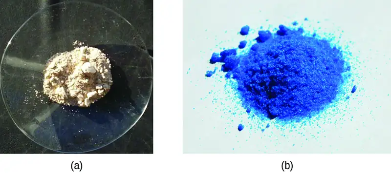
Chapter Review¶
Key Terms¶
- actinide series
- (also, actinoid series) actinium and the elements in the second row or the f-block, atomic numbers 89–103
- bidentate ligand
- ligand that coordinates to one central metal through coordinate bonds from two different atoms
- central metal
- ion or atom to which one or more ligands is attached through coordinate covalent bonds
- chelate
- complex formed from a polydentate ligand attached to a central metal
- chelating ligand
- ligand that attaches to a central metal ion by bonds from two or more donor atoms
- cis configuration
- configuration of a geometrical isomer in which two similar groups are on the same side of an imaginary reference line on the molecule
- coordination compound
- stable compound in which the central metal atom or ion acts as a Lewis acid and accepts one or more pairs of electrons
- coordination compound
- substance consisting of atoms, molecules, or ions attached to a central atom through Lewis acid-base interactions
- coordination number
- number of coordinate covalent bonds to the central metal atom in a complex or the number of closest contacts to an atom in a crystalline form
- coordination sphere
- central metal atom or ion plus the attached ligands of a complex
- crystal field splitting (Δoct)
- difference in energy between the t2g and eg sets or t and e sets of orbitals
- crystal field theory
- model that explains the energies of the orbitals in transition metals in terms of electrostatic interactions with the ligands but does not include metal ligand bonding
- d-block element
- one of the elements in groups 3–11 with valence electrons in d orbitals
- donor atom
- atom in a ligand with a lone pair of electrons that forms a coordinate covalent bond to a central metal
- eg orbitals
- set of two d orbitals that are oriented on the Cartesian axes for coordination complexes; in octahedral complexes, they are higher in energy than the t2g orbitals
- f-block element
- (also, inner transition element) one of the elements with atomic numbers 58–71 or 90–103 that have valence electrons in f orbitals; they are frequently shown offset below the periodic table
- first transition series
- transition elements in the fourth period of the periodic table (first row of the d-block), atomic numbers 21–29
- fourth transition series
- transition elements in the seventh period of the periodic table (fourth row of the d-block), atomic numbers 89 and 104–111
- geometric isomers
- isomers that differ in the way in which atoms are oriented in space relative to each other, leading to different physical and chemical properties
- high-spin complex
- complex in which the electrons maximize the total electron spin by singly populating all of the orbitals before pairing two electrons into the lower-energy orbitals
- hydrometallurgy
- process in which a metal is separated from a mixture by first converting it into soluble ions, extracting the ions, and then reducing the ions to precipitate the pure metal
- ionization isomer
- (or coordination isomer) isomer in which an anionic ligand is replaced by the counter ion in the inner coordination sphere
- lanthanide series
- (also, lanthanoid series) lanthanum and the elements in the first row or the f-block, atomic numbers 57–71
- ligand
- ion or neutral molecule attached to the central metal ion in a coordination compound
- linkage isomer
- coordination compound that possesses a ligand that can bind to the transition metal in two different ways (CN− vs. NC−)
- low-spin complex
- complex in which the electrons minimize the total electron spin by pairing in the lower-energy orbitals before populating the higher-energy orbitals
- monodentate
- ligand that attaches to a central metal through just one coordinate covalent bond
- optical isomer
- (also, enantiomer) molecule that is a nonsuperimposable mirror image with identical chemical and physical properties, except when it reacts with other optical isomers
- pairing energy (P)
- energy required to place two electrons with opposite spins into a single orbital
- platinum metals
- group of six transition metals consisting of ruthenium, osmium, rhodium, iridium, palladium, and platinum that tend to occur in the same minerals and demonstrate similar chemical properties
- polydentate ligand
- ligand that is attached to a central metal ion by bonds from two or more donor atoms, named with prefixes specifying how many donors are present (e.g., hexadentate = six coordinate bonds formed)
- rare earth element
- collection of 17 elements including the lanthanides, scandium, and yttrium that often occur together and have similar chemical properties, making separation difficult
- second transition series
- transition elements in the fifth period of the periodic table (second row of the d-block), atomic numbers 39–47
- smelting
- process of extracting a pure metal from a molten ore
- spectrochemical series
- ranking of ligands according to the magnitude of the crystal field splitting they induce
- steel
- material made from iron by removing impurities in the iron and adding substances that produce alloys with properties suitable for specific uses
- strong-field ligand
- ligand that causes larger crystal field splittings
- superconductor
- material that conducts electricity with no resistance
- t2g orbitals
- set of three d orbitals aligned between the Cartesian axes for coordination complexes; in octahedral complexes, they are lowered in energy compared to the eg orbitals according to CFT
- third transition series
- transition elements in the sixth period of the periodic table (third row of the d-block), atomic numbers 57 and 72–79
- trans configuration
- configuration of a geometrical isomer in which two similar groups are on opposite sides of an imaginary reference line on the molecule
- weak-field ligand
- ligand that causes small crystal field splittings
Key Concepts and Summary¶
19.1 Occurrence, Preparation, and Properties of Transition Metals and Their Compounds¶
The transition metals are elements with partially filled d orbitals, located in the d-block of the periodic table. The reactivity of the transition elements varies widely from very active metals such as scandium and iron to almost inert elements, such as the platinum metals. The type of chemistry used in the isolation of the elements from their ores depends upon the concentration of the element in its ore and the difficulty of reducing ions of the elements to the metals. Metals that are more active are more difficult to reduce.
Transition metals exhibit chemical behavior typical of metals. For example, they oxidize in air upon heating and react with elemental halogens to form halides. Those elements that lie above hydrogen in the activity series react with acids, producing salts and hydrogen gas. Oxides, hydroxides, and carbonates of transition metal compounds in low oxidation states are basic. Halides and other salts are generally stable in water, although oxygen must be excluded in some cases. Most transition metals form a variety of stable oxidation states, allowing them to demonstrate a wide range of chemical reactivity.
19.2 Coordination Chemistry of Transition Metals¶
The transition elements and main group elements can form coordination compounds, or complexes, in which a central metal atom or ion is bonded to one or more ligands by coordinate covalent bonds. Ligands with more than one donor atom are called polydentate ligands and form chelates. The common geometries found in complexes are tetrahedral and square planar (both with a coordination number of four) and octahedral (with a coordination number of six). Cis and trans configurations are possible in some octahedral and square planar complexes. In addition to these geometrical isomers, optical isomers (molecules or ions that are mirror images but not superimposable) are possible in certain octahedral complexes. Coordination complexes have a wide variety of uses including oxygen transport in blood, water purification, and pharmaceutical use.
19.3 Spectroscopic and Magnetic Properties of Coordination Compounds¶
Crystal field theory treats interactions between the electrons on the metal and the ligands as a simple electrostatic effect. The presence of the ligands near the metal ion changes the energies of the metal d orbitals relative to their energies in the free ion. Both the color and the magnetic properties of a complex can be attributed to this crystal field splitting. The magnitude of the splitting (Δoct) depends on the nature of the ligands bonded to the metal. Strong-field ligands produce large splitting and favor low-spin complexes, in which the t2g orbitals are completely filled before any electrons occupy the eg orbitals. Weak-field ligands favor formation of high-spin complexes. The t2g and the eg orbitals are singly occupied before any are doubly occupied.
Exercises¶
19.1 Occurrence, Preparation, and Properties of Transition Metals and Their Compounds¶
1. Write the electron configurations for each of the following elements:
(a) Sc
(b) Ti
(c) Cr
(d) Fe
(e) Ru
Answer
(a) Sc: [Ar]4s23d1; (b) Ti: [Ar]4s23d2; (c) Cr: [Ar]4s13d5; (d) Fe: [Ar]4s23d6; (e) Ru: [Kr]5s24d6
2. Write the electron configurations for each of the following elements and its ions:
(a) Ti
(b) Ti2+
(c) Ti3+
(d) Ti4+
3. Write the electron configurations for each of the following elements and its 3+ ions:
(a) La
(b) Sm
(c) Lu
Answer
(a) La: [Xe]6s25d1, La3+: [Xe]; (b) Sm: [Xe]6s24f6, Sm3+: [Xe]4f5; (c) Lu: [Xe]6s24f145d1, Lu3+: [Xe]4f14
4. Why are the lanthanoid elements not found in nature in their elemental forms?
5. Which of the following elements is most likely to be used to prepare La by the reduction of La2O3: Al, C, or Fe? Why?
Answer
Al is used because it is the strongest reducing agent and the only option listed that can provide sufficient driving force to convert La(III) into La.
6. Which of the following is the strongest oxidizing agent: \(\text{VO}_{4}{}^{3},\) \(\text{CrO}_{4}{}^{2-},\) or \(\text{MnO}_{4}{}^{-}\text{?}\)
7. Which of the following elements is most likely to form an oxide with the formula MO3: Zr, Nb, or Mo?
Answer
Mo
8. The following reactions all occur in a blast furnace. Which of these are redox reactions?
(a) \(\text{3Fe}_{2}\text{O}_{3}(s)+\text{CO}(g)\:\longrightarrow\:\text{2Fe}_{3}\text{O}_{4}(s)+\text{CO}_{2}(g)\)
(b) \(\text{Fe}_{3}\text{O}_{4}(s)+\text{CO}(g)\:\longrightarrow\:\text{3FeO}(s)+\text{CO}_{2}(g)\)
(c) \(\text{FeO}(s)+\text{CO}(g)\:\longrightarrow\:\text{Fe}(l)+\text{CO}_{2}(g)\)
(d) \(\text{C}(s)+\text{O}_{2}(g)\:\longrightarrow\:\text{CO}_{2}(g)\)
(e) \(\text{C}(s)+\text{CO}_{2}(g)\:\longrightarrow\:\text{2CO}(g)\)
(f) \(\text{CaCO}_{3}(s)\:\longrightarrow\:\text{CaO}(s)+\text{CO}_{2}(g)\)
(g) \(\text{CaO}(s)+\text{SiO}_{2}(s)\:\longrightarrow\:\text{CaSiO}_{3}(l)\)
9. Why is the formation of slag useful during the smelting of iron?
Answer
The CaSiO3 slag is less dense than the molten iron, so it can easily be separated. Also, the floating slag layer creates a barrier that prevents the molten iron from exposure to O2, which would oxidize the Fe back to Fe2O3.
10. Would you expect an aqueous manganese(VII) oxide solution to have a pH greater or less than 7.0? Justify your answer.
11. Iron(II) can be oxidized to iron(III) by dichromate ion, which is reduced to chromium(III) in acid solution. A 2.5000-g sample of iron ore is dissolved and the iron converted into iron(II). Exactly 19.17 mL of 0.0100 M Na2Cr2O7 is required in the titration. What percentage of the ore sample was iron?
Answer
2.57%
12. How many cubic feet of air at a pressure of 760 torr and 0 °C is required per ton of Fe2O3 to convert that Fe2O3 into iron in a blast furnace? For this exercise, assume air is 19% oxygen by volume.
13. Find the potentials of the following electrochemical cell:
Cd | Cd2+, M = 0.10 ‖ Ni2+, M = 0.50 | Ni
Answer
0.167 V
14. A 2.5624-g sample of a pure solid alkali metal chloride is dissolved in water and treated with excess silver nitrate. The resulting precipitate, filtered and dried, weighs 3.03707 g. What was the percent by mass of chloride ion in the original compound? What is the identity of the salt?
15. The standard reduction potential for the reaction \({[\text{Co}{(\text{H}_{2}\text{O})}_{6}]}^{3+}(aq)+\text{e}^{-}\:\longrightarrow\:{[{\text{Co}(\text{H}}_{2}\text{O}{)}_{6}]}^{2+}(aq)\) is about 1.8 V. The reduction potential for the reaction \({[\text{Co}{(\text{NH}_{3})}_{6}]}^{3+}(aq)+\text{e}^{-}\:\longrightarrow\:{[\text{Co}{(\text{NH}_{3})}_{6}]}^{2+}(aq)\) is +0.1 V. Calculate the cell potentials to show whether the complex ions, [Co(H2O)6]2+ and/or [Co(NH3)6]2+, can be oxidized to the corresponding cobalt(III) complex by oxygen.
Answer
E° = −0.6 V, E° is negative so this reduction is not spontaneous. E° = +1.1 V
16. Predict the products of each of the following reactions. (Note: In addition to using the information in this chapter, also use the knowledge you have accumulated at this stage of your study, including information on the prediction of reaction products.)
(a) \(\text{MnCO}_{3}(s)+\text{HI}(aq)\:\longrightarrow\)
(b) \(\text{CoO}(s)+\text{O}_{2}(g)\:\longrightarrow\)
(c) \(\text{La}(s)+\text{O}_{2}(g)\:\longrightarrow\)
(d) \(\text{V}(s)+\text{VCl}_{4}(s)\:\longrightarrow\)
(e) \(\text{Co}(s)+{xs\text{F}}_{2}(g)\:\longrightarrow\)
(f) \(\text{CrO}_{3}(s)+\text{CsOH}(aq)\:\longrightarrow\)
17. Predict the products of each of the following reactions. (Note: In addition to using the information in this chapter, also use the knowledge you have accumulated at this stage of your study, including information on the prediction of reaction products.)
(a) \(\text{Fe}(s)+\text{H}_{2}\text{SO}_{4}(aq)\:\longrightarrow\)
(b) \(\text{FeCl}_{3}(aq)+\text{NaOH}(aq)\:\longrightarrow\)
(c) \(\text{Mn}{(\text{OH})}_{2}(s)+\text{HBr}(aq)\:\longrightarrow\)
(d) \(\text{Cr}(s)+\text{O}_{2}(g)\:\longrightarrow\)
(e) \(\text{Mn}_{2}\text{O}_{3}(s)+\text{HCl}(aq)\longrightarrow\)
(f) \(\text{Ti}(s)+xs\text{F}_{2}(g)\:\longrightarrow\)
Answer
(a) \(\text{Fe}(s)+2\text{H}_{3}\text{O}^{\text{+}}(aq)+\text{SO}_{4}{}^{2-}(aq)\:\longrightarrow\:\text{Fe}^{2+}(aq)+\text{SO}_{4}{}^{2-}(aq)+\text{H}_{2}(g)+2\text{H}_{2}\text{O}(l);\) (b) \(\text{FeCl}_{3}(aq)+\text{3Na}^{\text{+}}(aq)+\text{3OH}^{-}(aq)\:\longrightarrow\text{Fe}{(\text{OH})}_{3}(s)+\text{3Na}^{\text{+}}(aq)+\text{3Cl}^{\text{+}}(aq);\) (c) \(\text{Mn}{(\text{OH})}_{2}(s)+2\text{H}_{3}\text{O}^{\text{+}}(aq)+\text{2Br}^{-}(aq)\:\longrightarrow\:\text{Mn}^{2+}(aq)+\text{2Br}^{-}(aq)+4\text{H}_{2}\text{O}(l);\) (d) \(\text{4Cr}(s)+3\text{O}_{2}(g)\:\longrightarrow\:2\text{Cr}_{2}\text{O}_{3}(s);\) (e) \(\text{Mn}_{2}\text{O}_{3}(s)+6\text{H}_{3}\text{O}^{\text{+}}(aq)+\text{6Cl}^{-}(aq)\:\longrightarrow\:2\text{MnCl}_{3}(s)+9\text{H}_{2}\text{O}(l);\) (f) \(\text{Ti}(s)+xs\text{F}_{2}(g)\:\longrightarrow\:\text{TiF}_{4}(g)\)
18. Describe the electrolytic process for refining copper.
19. Predict the products of the following reactions and balance the equations.
(a) Zn is added to a solution of Cr2(SO4)3 in acid.
(b) FeCl2 is added to a solution containing an excess of \(\text{Cr}_{2}\text{O}_{7}{}^{2-}\) in hydrochloric acid.
(c) Cr2+ is added to \(\text{Cr}_{2}\text{O}_{7}{}^{2-}\) in acid solution.
(d) Mn is heated with CrO3.
(e) CrO is added to 2HNO3 in water.
(f) FeCl3 is added to an aqueous solution of NaOH.
Answer
(a) \(\text{Cr}_{2}{(\text{SO}_{4})}_{3}(aq)+\text{2Zn}(s)+\text{2H}_{3}\text{O}^{\text{+}}(aq)\:\longrightarrow\:\text{2Zn}^{2+}(aq)+\text{H}_{2}(g)+\text{2H}_{2}\text{O}(l)+\text{2Cr}^{2+}(aq)+\text{3SO}_{4}{}^{2-}(aq);\) (b) \(\text{4TiCl}_{3}(s)+\text{CrO}_{4}{}^{2-}(aq)+\text{8H}^{\text{+}}(aq)\:\longrightarrow\:\text{4Ti}^{4+}(aq)+\text{Cr}(s)+\text{4H}_{2}\text{O}(l)+\text{12Cl}^{-}(aq);\) (c) In acid solution between pH 2 and pH 6, \(\text{CrO}_{4}{}^{2-}\) forms \(\text{HCrO}_{4}{}^{-},\) which is in equilibrium with dichromate ion. The reaction is \(\text{2HCrO}_{4}{}^{-}(aq)\:\longrightarrow\:\text{Cr}_{2}\text{O}_{7}{}^{2-}(aq)+\text{H}_{2}\text{O}(l).\) At other acidic pHs, the reaction is \(\text{3Cr}^{2+}(aq)+\text{CrO}_{4}{}^{2-}(aq)+\text{8H}_{3}\text{O}^{\text{+}}(aq)\:\longrightarrow\:\text{4Cr}^{3+}(aq)+\text{12H}_{2}\text{O}(l);\) (d) \(\text{8CrO}_{3}(s)+\text{9Mn}(s)\:\overset{\Delta}{\longrightarrow}\:\text{4Cr}_{2}\text{O}_{3}(s)+\text{3Mn}_{3}\text{O}_{4}(s);\) (e) \(\text{CrO}(s)+\text{2H}_{3}\text{O}^{\text{+}}(aq)+\text{2NO}_{3}{}^{-}(aq)\:\longrightarrow\:\text{Cr}^{2+}(aq)+\text{2NO}_{3}{}^{-}(aq)+\text{3H}_{2}\text{O}(l);\) (f) \(\text{CrCl}_{3}(s)+\text{3NaOH}(aq)\:\longrightarrow\:\text{Cr}{(\text{OH})}_{3}(s)+\text{3Na}^{\text{+}}(aq)+\text{3Cl}^{-}(aq)\)
20. What is the gas produced when iron(II) sulfide is treated with a nonoxidizing acid?
21. Predict the products of each of the following reactions and then balance the chemical equations.
(a) Fe is heated in an atmosphere of steam.
(b) NaOH is added to a solution of Fe(NO3)3.
(c) FeSO4 is added to an acidic solution of KMnO4.
(d) Fe is added to a dilute solution of H2SO4.
(e) A solution of Fe(NO3)2 and HNO3 is allowed to stand in air.
(f) FeCO3 is added to a solution of HClO4.
(g) Fe is heated in air.
Answer
(a) \(\text{3Fe}(s)+\text{4H}_{2}\text{O}(g)\:\longrightarrow\:\text{Fe}_{3}\text{O}_{4}(s)+\text{4H}_{2}(g);\) (b) \(\text{3NaOH}(aq)+\text{Fe}{(\text{NO}_{3})}_{3}(aq)\:\overset{\;\text{H}_{2}\text{O}\;}{\rightarrow}\:\text{Fe}{(\text{OH})}_{3}(s)+\text{3Na}^{\text{+}}(aq)+3\text{NO}_{3}{}^{-}(aq);\) (c) \(\text{MnO}{}^{4-}+5\text{Fe}^{\text{2+}}+8\text{H}^{\text{+}}\:\longrightarrow\:\text{Mn}{}^{\text{2+}}+5\text{Fe}_{3}+4\text{H}_{2}\text{O};\) (d) \(\text{Fe}(s)+\text{2H}_{3}\text{O}^{\text{+}}(aq)+\text{SO}_{4}{}^{2-}(aq)\:\longrightarrow\:\text{Fe}^{2+}(aq)+\text{SO}_{4}{}^{2-}(aq)+\text{H}_{2}(g)+\text{2H}_{2}\text{O}(l);\) (e) \(\text{4Fe}^{2+}(aq)+\text{O}_{2}(g)+\text{4HNO}_{3}(aq)\:\longrightarrow\:\text{4Fe}^{3+}(aq)+\text{2H}_{2}\text{O}(l)+\text{4NO}_{3}{}^{-}(aq);\) (f) \(\text{FeCO}_{3}(s)+\text{2HClO}_{4}(aq)\:\longrightarrow\:\text{Fe}{(\text{ClO}_{4})}_{2}(aq)+\text{H}_{2}\text{O}(l)+\text{CO}_{2}(g);\) (g) \(\text{3Fe}(s)+\text{2O}_{2}(g)\:\overset{\:\Delta\:}{\longrightarrow}\:\text{Fe}_{3}\text{O}_{4}(s)\)
22. Balance the following equations by oxidation-reduction methods; note that three elements change oxidation state.
\(\text{Co}{(\text{NO}_{3})}_{2}(s)\:\longrightarrow\:\text{Co}_{2}\text{O}_{3}(s)+\text{NO}_{2}(g)+\text{O}_{2}(g)\)
23. Dilute sodium cyanide solution is slowly dripped into a slowly stirred silver nitrate solution. A white precipitate forms temporarily but dissolves as the addition of sodium cyanide continues. Use chemical equations to explain this observation. Silver cyanide is similar to silver chloride in its solubility.
Answer
As CN− is added,
\(\text{Ag}^{\text{+}}(aq)+\text{CN}^{-}(aq)\:\longrightarrow\:\text{AgCN}(s)\)
As more CN− is added,
\(\begin{array}{l} \text{Ag}^{\text{+}}(aq)+2\text{CN}^{-}(aq)\:\longrightarrow\:{[\text{Ag}\text{(CN)}_{2}]}^{-}(aq) \\ \text{AgCN}(s)+\text{CN}^{-}(aq)\:\longrightarrow\:{[\text{Ag}\text{(CN)}_{2}]}^{-}(aq) \end{array}\)
24. Predict which will be more stable, [CrO4]2− or [WO4]2−, and explain.
25. Give the oxidation state of the metal for each of the following oxides of the first transition series. (Hint: Oxides of formula M3O4 are examples of mixed valence compounds in which the metal ion is present in more than one oxidation state. It is possible to write these compound formulas in the equivalent format MO·M2O3, to permit estimation of the metal’s two oxidation states.)
(a) Sc2O3
(b) TiO2
(c) V2O5
(d) CrO3
(e) MnO2
(f) Fe3O4
(g) Co3O4
(h) NiO
(i) Cu2O
Answer
(a) Sc3+; (b) Ti4+; (c) V5+; (d) Cr6+; (e) Mn4+; (f) Fe2+ and Fe3+; (g) Co2+ and Co3+; (h) Ni2+; (i) Cu+
19.2 Coordination Chemistry of Transition Metals¶
26. Indicate the coordination number for the central metal atom in each of the following coordination compounds:
(a) [Pt(H2O)2Br2]
(b) [Pt(NH3)(py)(Cl)(Br)] (py = pyridine, C5H5N)
(c) [Zn(NH3)2Cl2]
(d) [Zn(NH3)(py)(Cl)(Br)]
(e) [Ni(H2O)4Cl2]
(f) [Fe(en)2(CN)2]+ (en = ethylenediamine, C2H8N2)
27. Give the coordination numbers and write the formulas for each of the following, including all isomers where appropriate:
(a) tetrahydroxozincate(II) ion (tetrahedral)
(b) hexacyanopalladate(IV) ion
(c) dichloroaurate(I) ion (note that aurum is Latin for "gold")
(d) diamminedichloroplatinum(II)
(e) potassium diamminetetrachlorochromate(III)
(f) hexaamminecobalt(III) hexacyanochromate(III)
(g) dibromobis(ethylenediamine) cobalt(III) nitrate
Answer
(a) 4, [Zn(OH)4]2−; (b) 6, [Pd(CN)6]2−; (c) 2, [AuCl2]−; (d) 4, [Pt(NH3)2Cl2]; (e) 6, K[Cr(NH3)2Cl4]; (f) 6, [Co(NH3)6][Cr(CN)6]; (g) 6, [Co(en)2Br2]NO3
28. Give the coordination number for each metal ion in the following compounds:
(a) [Co(CO3)3]3− (note that CO32− is bidentate in this complex)
(b) [Cu(NH3)4]2+
(c) [Co(NH3)4Br2]2(SO4)
(d) [Pt(NH3)4][PtCl4]
(e) [Cr(en)3](NO3)3
(f) [Pd(NH3)2Br2] (square planar)
(g) K3[Cu(Cl)5]
(h) [Zn(NH3)2Cl2]
29. Sketch the structures of the following complexes. Indicate any cis, trans, and optical isomers.
(a) [Pt(H2O)2Br2] (square planar)
(b) [Pt(NH3)(py)(Cl)(Br)] (square planar, py = pyridine, C5H5N)
(c) [Zn(NH3)3Cl]+ (tetrahedral)
(d) [Pt(NH3)3Cl]+ (square planar)
(e) [Ni(H2O)4Cl2]
(f) [Co(C2O4)2Cl2]3− (note that \(\text{C}_{2}\text{O}_{4}{}^{2-}\) is the bidentate oxalate ion, \(-\text{O}_{2}\text{CCO}_{2}{}^{-})\)
Answer
(a) [Pt(H2O)2Br2]:
![Two structures are shown. At the center of each is a P t atom. The structure on the left is labeled, “cis.” From this atom, a single bond represented by a dashed wedge extends from a vertex at the P t atom up and to the right to a B r atom. Similarly, a single bond represented by a solid wedge extends from a vertex at the P t atom down and to the right to a second B r atom. Another single bond represented by a dashed wedge extends from a vertex at the P t atom up and to the left to the O atom of an H subscript 2 O group. Similarly, a single bond represented by a solid wedge extends from a vertex at the P t atom down and to the left to a second O atom of an H subscript 2 O group. The structure on the right is labeled, “trans.” From the central P t atom, a single bond represented by a dashed wedge extends from a vertex at the P t atom up and to the right to a B r atom. Similarly, a single bond represented by a solid wedge extends from a vertex at the P t atom down and to the right to the O atom of an H subscript 2 O group. Another single bond represented by a dashed wedge extends from a vertex at the P t atom up and to the left to the O atom of a second H subscript 2 O group. Similarly, a single bond represented by a solid wedge extends from a vertex at the P t atom down and to the left to a second B r atom.;](img/cnx-chem-19-02-answer4a-img.webp)
(b) [Pt(NH3)(py)(Cl)(Br)]:
![Three structures are shown. At the center of each is a P t atom. From this atom in the first structure on the left, a single bond represented by a dashed wedge extends from a vertex at the P t atom up and to the right to a C l atom. Similarly, a single bond represented by a solid wedge extends from a vertex at the P t atom down and to the right to the N atom of an N H subscript 3 group. Another single bond represented by a dashed wedge extends from a vertex at the P t atom up and to the left to a B r atom. Similarly, a single bond represented by a solid wedge extends from a vertex at the P t atom down and to the left to p y. The middle structure shows a single bond represented by a dashed wedge extending from a vertex at the P t atom up and to the right to a B r atom. Similarly, a single bond represented by a solid wedge extends from a vertex at the P t atom down and to the right to the N atom of an N H subscript 3 group. Another single bond represented by a dashed wedge extends from a vertex at the P t atom up and to the left to p y. Similarly, a single bond represented by a solid wedge extends from a vertex at the P t atom down and to the left to a to a C l atom. The third structure shows a single bond represented by a dashed wedge extending from a vertex at the P t atom up and to the right to p y. Similarly, a single bond represented by a solid wedge extends from a vertex at the P t atom down and to the right to the N atom of an N H subscript 3 group. Another single bond represented by a dashed wedge extends from a vertex at the P t atom up and to the left to a C l atom. Similarly, a single bond represented by a solid wedge extends from a vertex at the P t atom down and to the left to a B r atom.;](img/cnx-chem-19-02-answer4b-img.webp)
(c) [Zn(NH3)3Cl]+ :
![Inside of brackets, a central Z n atom is bonded to a C l atom and three N atoms in N H subscript 3 groups in a tetrahedral spatial arrangement. Short line segments are used to represent a bond extending above to the C l atom and down and to the left to the N of the N H subscript 3 group from the Z n atom. A dashed wedge with the vertex at the Z n atom and wide end at the N atom of an N H subscript 3 group is used to represent a bond down and to the right of the Z n atom. The final bond is indicated by a similar solid wedge again directed down and only slightly right of center beneath the Z n atom to the N of an N H subscript 3 group. Outside the brackets a superscript plus sign is shown.;](img/cnx-chem-19-02-answer4c-img.webp)
(d) [Pt(NH3)3Cl]+ :
![This structure shows a single bond represented by a dashed wedge extending from a vertex at the P t atom up and to the right to the N atom of an N H subscript 3 group. Similarly, two single bonds represented by solid wedges extend from vertices at the P t atom down and to the right and down and to the left to the N atoms of N H subscript 3 groups. Another single bond represented by a dashed wedge extends from a vertex at the P t atom up and to the left to a C l atom. This structure is enclosed in brackets with superscript plus sign appearing to the right of the brackets.;](img/cnx-chem-19-02-answer4d-img.webp)
(e) [Ni(H2O)4Cl2]:
![Two structures are shown. The first is labeled, “trans.” Below this label inside brackets is a central N i atom. From the N i atom, line segments indicate bonds to C l atoms above and below. Above and to both the right and left, dashed wedges with their vertex at the N i atom widening as they move out from the atom indicate bonds with O atoms of H subscript 2 O groups. Similarly, solid wedges below to both the right and left indicate bonds to the O atoms of H subscript 2 O groups. This structure is enclosed in brackets. The second structure is labeled, “cis.” Inside brackets is a central N i atom. From the N i atom, line segments indicate bonds to a C l atom above and the O atom of an H subscript 2 O group below. Above and to both the right and left, dashed wedges indicate bonds with O atoms of H subscript 2 O groups. Similarly, a solid wedge below to the right indicates a bond with a C l atom and a solid wedge to the lower left indicates a bond to the O atoms of an H subscript 2 O group. This structure is also enclosed in brackets.;](img/cnx-chem-19-02-answer4e-img.webp)
(f) [Co(C2O4)2Cl2]3−:
![This figure includes three structures. The first structure includes a central C o atom that has four O atoms and two C l atoms attached with single bonds. These bonds are indicated with line segments extending above and below, dashed wedges extending up and to the left and right, and solid wedges extending below and to the left and right. C l atoms are bonded at the top and at the upper left of the structure. The remaining four bonds extend from the central C o atom to O atoms. The O atoms are each connected to C atoms which are each connected with double bonds to O atoms extending outward from the central C o atom. These C atoms are connected in pairs with bonds indicated by short line segments, forming two rings in the structure. This entire structure is enclosed in brackets. Outside the brackets to the right is a superscript 3 negative sign. The second structure, which appears to the be mirror image of the first structure, includes a central C o atom that has four O atoms and two C l atoms attached with single bonds. These bonds are indicated with line segments extending above and below, dashed wedges extending up and to the left and right, and solid wedges extending below and to the left and right. C l atoms are bonded at the top and at the upper right of the structure. The remaining four bonds extend from the central C o atom to O atoms. The O atoms are each connected to C atoms which are each connected with double bonds to O atoms extending outward from the central C o atom. These C atoms are connected in pairs with bonds indicated by short line segments, forming two rings in the structure. This entire structure is enclosed in brackets. Outside the brackets to the right is the superscript 3 negative sign. The third structure includes a central C o atom that has four O atoms and two C l atoms attached with single bonds. These bonds are indicated with line segments extending above and below, dashed wedges extending up and to the left and right, and solid wedges extending below and to the left and right. C l atoms are bonded at the top and bottom of the structure. The remaining four bonds extend from the central C o atom to the O atoms. The O atoms are each connected to C atoms which are in turn each double bonded to O atoms extending outward from the central C o atom. These C atoms are connected in pairs with bonds indicated by short line segments, forming two rings in the structure. This entire structure is enclosed in brackets. Outside the brackets, to the right, is a superscript 3 negative sign. This final structure has rings of atoms on opposite sides of the structure.](img/cnx-chem-19-02-answer4f-img.webp)
30. Draw diagrams for any cis, trans, and optical isomers that could exist for the following (en is ethylenediamine):
(a) [Co(en)2(NO2)Cl]+
(b) [Co(en)2Cl2]+
(c) [Pt(NH3)2Cl4]
(d) [Cr(en)3]3+
(e) [Pt(NH3)2Cl2]
31. Name each of the compounds or ions given in Exercise 28, including the oxidation state of the metal.
Answer
(a) tricarbonatocobaltate(III) ion; (b) tetraaminecopper(II) ion; (c) tetraaminedibromocobalt(III) sulfate; (d) tetraamineplatinum(II) tetrachloroplatinate(II); (e) tris-(ethylenediamine)chromium(III) nitrate; (f) diaminedibromopalladium(II); (g) potassium pentachlorocuprate(II); (h) diaminedichlorozinc(II)
32. Name each of the compounds or ions given in Exercise 30.
33. Specify whether the following complexes have isomers.
(a) tetrahedral [Ni(CO)2(Cl)2]
(b) trigonal bipyramidal [Mn(CO)4NO]
(c) [Pt(en)2Cl2]Cl2
Answer
(a) none; (b) none; (c) The two Cl ligands can be cis or trans. When they are cis, there will also be an optical isomer.
34. Predict whether the carbonate ligand \(\text{CO}_{3}{}^{2-}\)will coordinate to a metal center as a monodentate, bidentate, or tridentate ligand.
35. Draw the geometric, linkage, and ionization isomers for [CoCl5CN][CN].
Answer
![This figure shows eight structures, each inside brackets in three rows. The first row contains three structures, the second row contains three structures, and the third row contains two structures. These structures are described in increasing order moving left to right and top to bottom in the figure. Each includes a central C o atom with line segments indicating bonds above and below the central atom. Above and to both the left and right, dashed wedges with vertices at the C o atom widening as they move out from the atom indicates single bonds. Similarly, solid wedges below and to both the left and right indicate single bonds. Outside each structure in brackets, to the right, an element or group is identified in brackets as a superscript. In the first structure, the C atom of a C N group is bonded to the C o atom. All 5 remaining bonds are with C l atoms. C N appears in brackets as a superscript outside the structure. In the second structure, the N atom of a C N group is bonded to the C o atom. All 5 remaining bonds are with C l atoms. C N appears in brackets as a superscript outside the structure. In the third structure, the C atom of two C N groups are bonded to the C o atom at the top and bottom of the structure. All 4 remaining bonds are with C l atoms. C l appears in brackets as a superscript outside the structure. In the fourth structure, the C atom of a C N groups is bonded to the C o atom at the top and the N atom of a C N group which is bonded at the bottom of the structure. All 4 remaining bonds are with C l atoms. C l appears in brackets as a superscript outside the structure. In the fifth structure, the N atom of two C N groups are bonded to the C o atom at the top and bottom of the structure. All 4 remaining bonds are with C l atoms. C l appears in brackets as a superscript outside the structure. In the sixth structure, the C atom of two C N groups are bonded to the C o atom at the top and upper right of the structure. All 4 remaining bonds are with C l atoms. C l appears in brackets as a superscript outside the structure. In the seventh structure, the C atom of a C N group is bonded to the C o atom at the top of the structure and the N atom of a C N group is bonded at the upper right of the structure. All 4 remaining bonds are with C l atoms. C l appears in brackets as a superscript outside the structure. In the eighth structure, the N atom of two C N groups are bonded to the C o atom at the top and upper right of the structure. All 4 remaining bonds are with C l atoms. C l appears in brackets as a superscript outside the structure.](img/cnx-chem-19-02-ex10ans-img.webp)
19.3 Spectroscopic and Magnetic Properties of Coordination Compounds¶
36. Determine the number of unpaired electrons expected for [Fe(NO2)6]3−and for [FeF6]3− in terms of crystal field theory.
37. Draw the crystal field diagrams for [Fe(NO2)6]4− and [FeF6]3−. State whether each complex is high spin or low spin, paramagnetic or diamagnetic, and compare Δoct to P for each complex.
Answer
![A diagram is shown with two columns and two rows of squares outlined in yellow. The first column is labeled “( F e ( N O subscript 2 ) subscript 6 ) superscript 4 negative sign.” The second is labeled, “( F e F subscript 6 ) superscript 3 negative sign.” In the left column, three linked squares outlined in yellow are shown. Each of the squares contains two half arrows, one pointing up and one pointing down. In a row just above, two empty linked squares are shown. The label, “Low spin, diamagnetic, P less than capital delta subscript oct,” is provided below the column. In the right column, three linked squares outlined in yellow are shown. The square on the left contains two half arrows, one pointing up and one pointing down. The other two squares each contain a single upward pointing half arrow. In a row just above, two linked squares are shown which each contain a single upward pointing half arrow. The label, “High spin, paramagnetic, P greater than capital delta subscript oct,” is provided below the column.](img/cnx-chem-19-03-fecn6feh2o-img.webp)
38. Give the oxidation state of the metal, number of d electrons, and the number of unpaired electrons predicted for [Co(NH3)6]Cl3.
39. The anhydrous solid CoCl2 is blue in color. Because it readily absorbs water from the air, it is used as a humidity indicator to monitor if equipment (such as a cell phone) has been exposed to excessive levels of moisture. Predict what product is formed by this reaction, and how many unpaired electrons this complex will have.
Answer
[Co(H2O)6]Cl2 with three unpaired electrons.
40. Is it possible for a complex of a metal in the transition series to have six unpaired electrons? Explain.
41. How many unpaired electrons are present in each of the following?
(a) [CoF6]3− (high spin)
(b) [Mn(CN)6]3− (low spin)
(c) [Mn(CN)6]4− (low spin)
(d) [MnCl6]4− (high spin)
(e) [RhCl6]3− (low spin)
Answer
(a) 4; (b) 2; (c) 1; (d) 5; (e) 0
42. Explain how the diphosphate ion, [O3P−O−PO3]4−, can function as a water softener that prevents the precipitation of Fe2+ as an insoluble iron salt.
43. For complexes of the same metal ion with no change in oxidation number, the stability increases as the number of electrons in the t2g orbitals increases. Which complex in each of the following pairs of complexes is more stable?
(a) [Fe(H2O)6]2+ or [Fe(CN)6]4−
(b) [Co(NH3)6]3+ or [CoF6]3−
(c) [Mn(CN)6]4− or [MnCl6]4−
Answer
(a) [Fe(CN)6]4−; (b) [Co(NH3)6]3+; (c) [Mn(CN)6]4−
44. Trimethylphosphine, P(CH3)3, can act as a ligand by donating the lone pair of electrons on the phosphorus atom. If trimethylphosphine is added to a solution of nickel(II) chloride in acetone, a blue compound that has a molecular mass of approximately 270 g and contains 21.5% Ni, 26.0% Cl, and 52.5% P(CH3)3 can be isolated. This blue compound does not have any isomeric forms. What are the geometry and molecular formula of the blue compound?
45. Would you expect the complex [Co(en)3]Cl3 to have any unpaired electrons? Any isomers?
Answer
The complex does not have any unpaired electrons. The complex does not have any geometric isomers, but the mirror image is nonsuperimposable, so it has an optical isomer.
46. Would you expect the Mg3[Cr(CN)6]2 to be diamagnetic or paramagnetic? Explain your reasoning.
47. Would you expect salts of the gold(I) ion, Au+, to be colored? Explain.
Answer
No. Au+ has a complete 5d sublevel.
48. [CuCl4]2− is green. [Cu(H2O)6]2+is blue. Which absorbs higher-energy photons? Which is predicted to have a larger crystal field splitting?
Adapted from Chemistry 2e by OpenStax, licensed under CC BY 4.0. Access the original for free at openstax.org. Changes: converted to the web reading format of The Open Book Project.
-
National Council against Health Fraud, NCAHF Policy Statement on Chelation Therapy, (Peabody, MA, 2002). ↩